Decipherment · June 1916
Rongmi (容密): twelve telegrams and their key
Twelve cipher telegrams exchanged in June 1916 between Tokyo and Shanghai around Huang Xing and Zhang Xiaozhun: buying arms in Japan for Zhejiang, loans, and negotiations with Beijing after Yuan Shikai’s death. A single key reads them all.[27]
Grid reading order: Brice Dudout. Transcription of the continuation sheets, key recovery, translation and probable readings: Claude (Anthropic). All digits re-read by Brice Dudout. Starting model (four digit substitutions): Codex’s trials.
The key is a reconstruction, not taken from a historical code book. Translations are working proposals; probable readings are shown beside the decoded text, never in place of it. Identifications of people are candidates, with their source.
The key
Sheets are read in columns, right to left and top to bottom (reading order proposed by Brice Dudout), in groups of four digits; the public prefix 1369 1378 = 容密 stays in clear. For each group C: replace each digit using the table for its place, then compute P = (σ(C) + 0901) mod 10000 by ordinary addition with carries; P is the character number in the Chinese Telegraph Code (CTC).
| Digit read | 0 | 1 | 2 | 3 | 4 | 5 | 6 | 7 | 8 | 9 |
|---|---|---|---|---|---|---|---|---|---|---|
| thousands | 0 | 1 | 2 | 3 | 4 | 5 | 6 | 7 | 9 | 0 |
| hundreds | 0 | 1 | 2 | 3 | 4 | 5 | 6 | 7 | 8 | 9 |
| tens | 0 | 1 | 9 | 8 | 2 | 7 | 6 | 5 | 4 | 3 |
| units | 9 | 8 | 0 | 1 | 7 | 2 | 3 | 4 | 5 | 6 |
No group starts with 00: the encipherer writes 90. Example: σ(2081) = 2048 (tens 8 → 4, units 1 → 8), + 0901 = 2949 = 款.
The key was recovered on four telegrams (N02, N08, N11, N12), then read the other seven without refitting; refitted on the whole re-read corpus (590 groups), it returns exactly the same tables. Only the “90 = 00” rule was added afterwards, from all groups beginning 90.
In the proposed reading, {x} replaces an anomalous decoded character with a probable reading; the note says whether a variant of the cipher group differing by a single digit gives that character, or whether it is a contextual reading. 〔x〕: character kept, unresolved.
Context
The dated telegrams run from 9 to 16 June 1916, just after Yuan Shikai’s death (6 June). Zhejiang, whose military governor Lü Gongwang took office on 6 May, is trying to buy arms in Japan; Zhang Xiaozhun (courtesy name 潤農), in Tokyo with Huang Xing, leads the talks (N02, N08, N12, N14) and reports to Huang Qun (溯初, N11) and Jiang Fangzhen (百里, N19a, N28).
From Shanghai, Yin Ruli, Ge Jing’en and Huang Fu (abbreviated signature 驪郛恩) relay Lü Gongwang’s questions (N21, N25, N36) and report to Huang Xing on the dealings with Beijing (N24): Li Yuanhong invites the Shanghai notables; Tang Hualong (濟武), Gu Zhongxiu (九峯), Zhang Ji (溥泉) and Fan Yuanlian (靜生) are approached; the condition set is the repeal of Yuan’s laws and a return to the 1912 Provisional Constitution, restored on 29 June.
N14
47 groups · Date: June 9, 1916 · Direction: Tokyo → Shanghai · 4 sheets · digits re-read by Brice Dudout
Huang Xing to the Zhejiang governor after Yuan’s death: the arms go first, the one-million loan will follow.
Raw decoding, uncorrected
轉呂都督鑒袁死大局益艱非切實預備不足以申張國法奠定國基感佩藎籌當効棉力械先運款百萬亦可卽成興佳
Proposed reading
轉呂都督鑒：袁死，大局益艱，非切實預備，不足以申張國法、奠定國基。感佩藎籌，當効棉力。械先運，款百萬亦可卽成。興佳
Translation
To be passed to Governor Lü: Yuan is dead and the general situation is harder. Without serious preparation we cannot uphold the law of the State and lay its foundations. Grateful for your devoted plans, I shall give my modest strength. The arms will be shipped first; the one-million loan can also be concluded at once. — Xing. The 9th.
Forms and JACAR sources
N14-1 · B03050089300 PDF 7 L · JACAR · scan

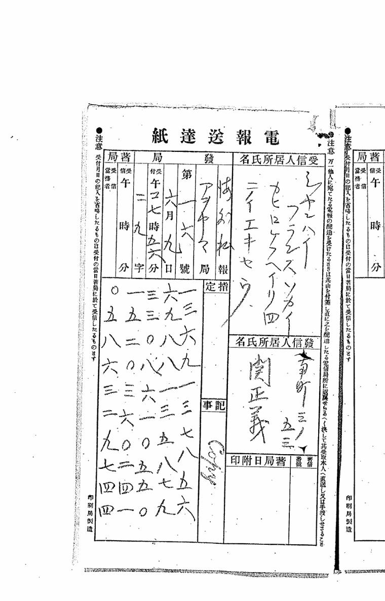
N14-2 · B03050089300 PDF 8 R · JACAR · scan

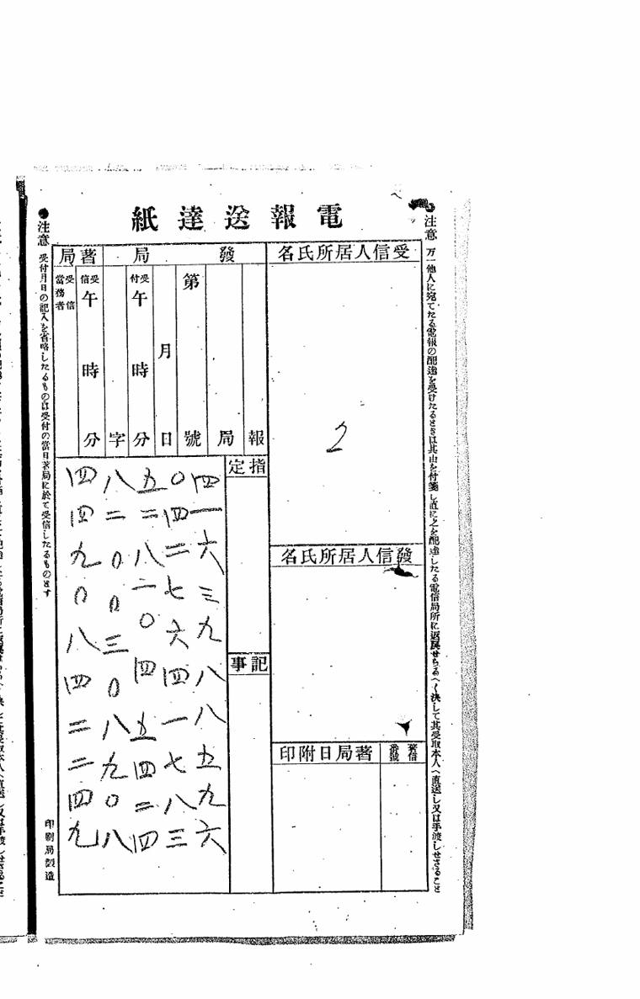
N14-3 · B03050089300 PDF 8 L · JACAR · scan

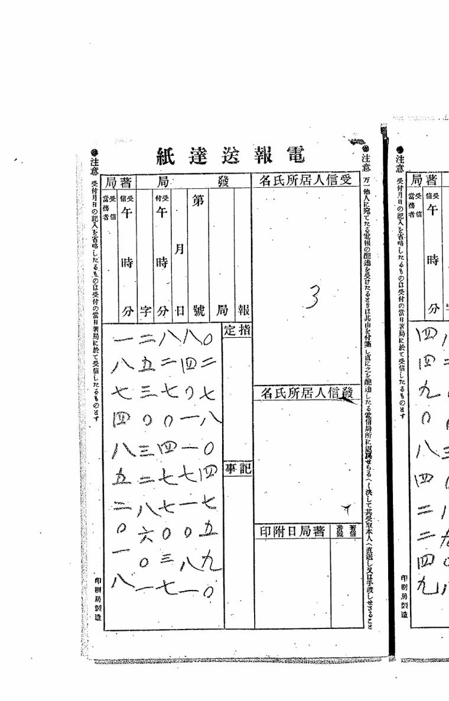
N14-4 · B03050089300 PDF 9 R · JACAR · scan

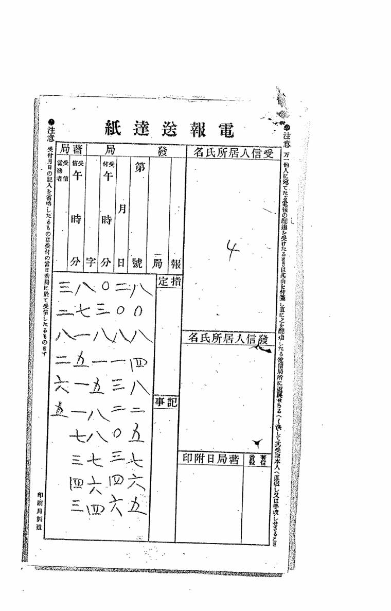
Digits and CTC, group by group
| # | C | CTC | Char. | Sheet |
|---|---|---|---|---|
| prefix | 1369 | 2267 | 掽 | N14-1 |
| prefix | 1378 | 2256 | 揜 | N14-1 |
| 1 | 5669 | 6567 | 轉 | N14-1 |
| 2 | 8813 | 0712 | 呂 | N14-1 |
| 3 | 5879 | 6757 | 都 | N14-1 |
| 4 | 3308 | 4206 | 督 | N14-1 |
| 5 | 6105 | 7003 | 鑒 | N14-1 |
| 6 | 5015 | 5913 | 袁 | N14-1 |
| 7 | 2036 | 2984 | 死 | N14-1 |
| 8 | 0241 | 1129 | 大 | N14-1 |
| 9 | 0586 | 1444 | 局 | N14-1 |
| 10 | 3297 | 4135 | 益 | N14-1 |
| 11 | 4441 | 5329 | 艱 | N14-1 |
| 12 | 6398 | 7236 | 非 | N14-2 |
| 13 | 8596 | 0434 | 切 | N14-2 |
| 14 | 0427 | 1395 | 實 | N14-2 |
| 15 | 6417 | 7315 | 預 | N14-2 |
| 16 | 8352 | 0271 | 備 | N14-2 |
| 17 | 8104 | 0008 | 不 | N14-2 |
| 18 | 5424 | 6398 | 足 | N14-2 |
| 19 | 8200 | 0110 | 以 | N14-2 |
| 20 | 3089 | 3947 | 申 | N14-2 |
| 21 | 0844 | 1728 | 張 | N14-2 |
| 22 | 9084 | 0948 | 國 | N14-2 |
| 23 | 2249 | 3127 | 法 | N14-2 |
| 24 | 0278 | 1156 | 奠 | N14-3 |
| 25 | 0475 | 1353 | 定 | N14-3 |
| 26 | 9084 | 0948 | 國 | N14-3 |
| 27 | 0117 | 1015 | 基 | N14-3 |
| 28 | 1081 | 1949 | 感 | N14-3 |
| 29 | 8270 | 0160 | 佩 | N14-3 |
| 30 | 4770 | 5660 | 藎 | N14-3 |
| 31 | 3725 | 4693 | 籌 | N14-3 |
| 32 | 3032 | 3981 | 當 | N14-3 |
| 33 | 8601 | 0509 | 効 | N14-3 |
| 34 | 1874 | 2758 | 棉 | N14-3 |
| 35 | 8520 | 0500 | 力 | N14-3 |
| 36 | 1880 | 2750 | 械 | N14-3 |
| 37 | 8482 | 0341 | 先 | N14-4 |
| 38 | 5765 | 6663 | 運 | N14-4 |
| 39 | 2081 | 2949 | 款 | N14-4 |
| 40 | 3203 | 4102 | 百 | N14-4 |
| 41 | 4603 | 5502 | 萬 | N14-4 |
| 42 | 8158 | 0076 | 亦 | N14-4 |
| 43 | 8764 | 0668 | 可 | N14-4 |
| 44 | 8715 | 0613 | 卽 | N14-4 |
| 45 | 1173 | 2052 | 成 | N14-4 |
| 46 | 4332 | 5281 | 興 | N14-4 |
| 47 | 8265 | 0163 | 佳 | N14-4 |
N19b
143 groups · Date: June 11, 1916 · Direction: Tokyo → Shanghai · 12 sheets · digits re-read by Brice Dudout
Huang Xing to the Shanghai senders (reply to the 8th and 9th): yes to the 1912 Constitution and Parliament, but nothing without armed force; Zhejiang must be the pillar of the South-East; Lu Rongting and Li Liejun should march on Hubei and Jiangxi; Japan will not lend to Beijing before unification.
Raw decoding, uncorrected
齊隹電悉兄等主張恢復舊約皽及國會並籧織新內閣所見遠大若能辦到以外問題自迎刃而解弟已電垣鳳兩兄就滬取各方同意發表鄙見以期一致惟求皽律上之解決非有充實武力爲之後援必無効果仍望浙省積極進行作東南之砥柱垚面分電幹卿俠黃速出鄂贛如此庶有和平之望此間已與當局接洽非俟南北統一憯得借款於摘政府並聞興真
Proposed reading
齊、{佳}電悉。兄等主張恢復舊約{法}及國會，並{組}織新內閣，所見遠大。若能辦到，以外問題自迎刃而解。弟已電垣、鳳兩兄就滬取各方同意，發表鄙見，以期一致。惟求{法}律上之解決，非有充實武力爲之後援，必無効果。仍望浙省積極進行，作東南之砥柱。{一}面分電幹卿、俠黃速出鄂、贛，如此庶有和平之望。此間已與當局接洽，非俟南北統一，〔憯〕得借款於{北}政府。並聞。興真
Translation
Your telegrams of the 8th and 9th received. You advocate restoring the old Provisional Constitution and Parliament and forming a new cabinet: far-sighted. If it can be done, the other questions will solve themselves. I have wired our friends Yuan and Feng to gather everyone’s agreement in Shanghai and publish my view, so that we speak with one voice. But a legal solution will have no effect without sufficient armed force behind it. I still hope Zhejiang will press ahead and be the pillar of the South-East, and at the same time wire Ganqing and Xiahuang separately to march quickly on Hubei and Jiangxi: only then can we hope for peace. Here I have reached an understanding with the authorities: no loan to the Northern government before North and South are unified. For information. — Xing. The 11th.
Forms and JACAR sources
N19b-1 · B03050089300 PDF 27 R · JACAR · scan

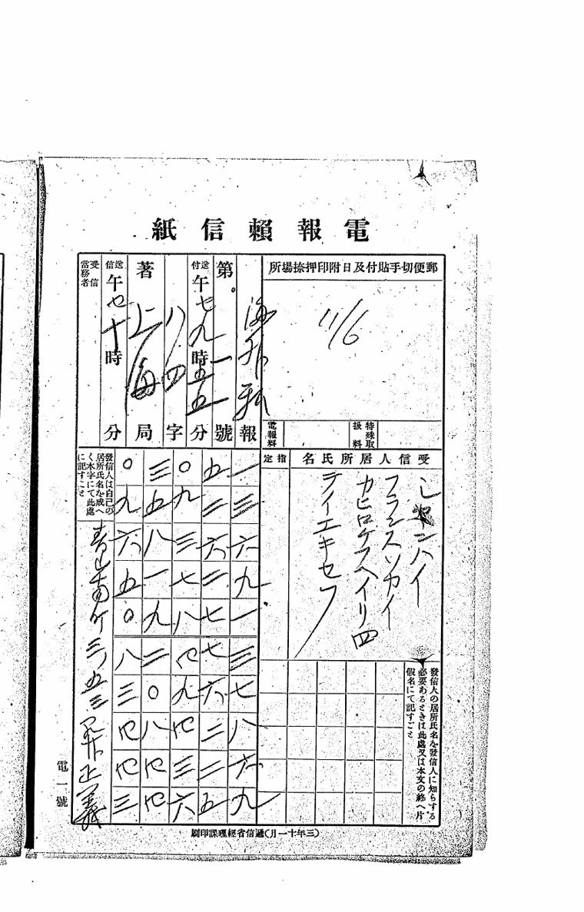
N19b-2 · B03050089300 PDF 27 L · JACAR · scan

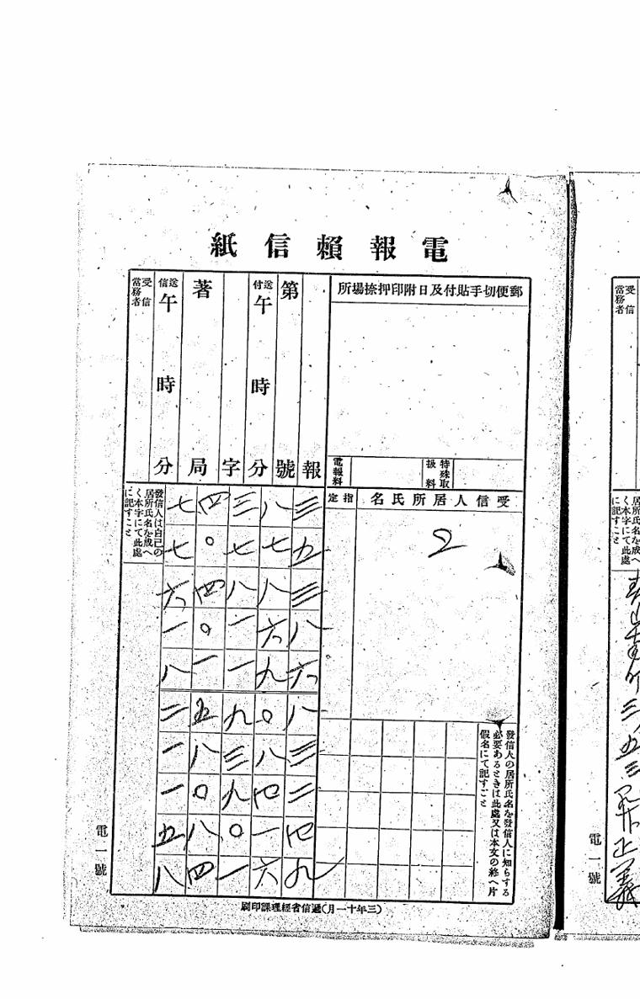
N19b-3 · B03050089300 PDF 28 R · JACAR · scan

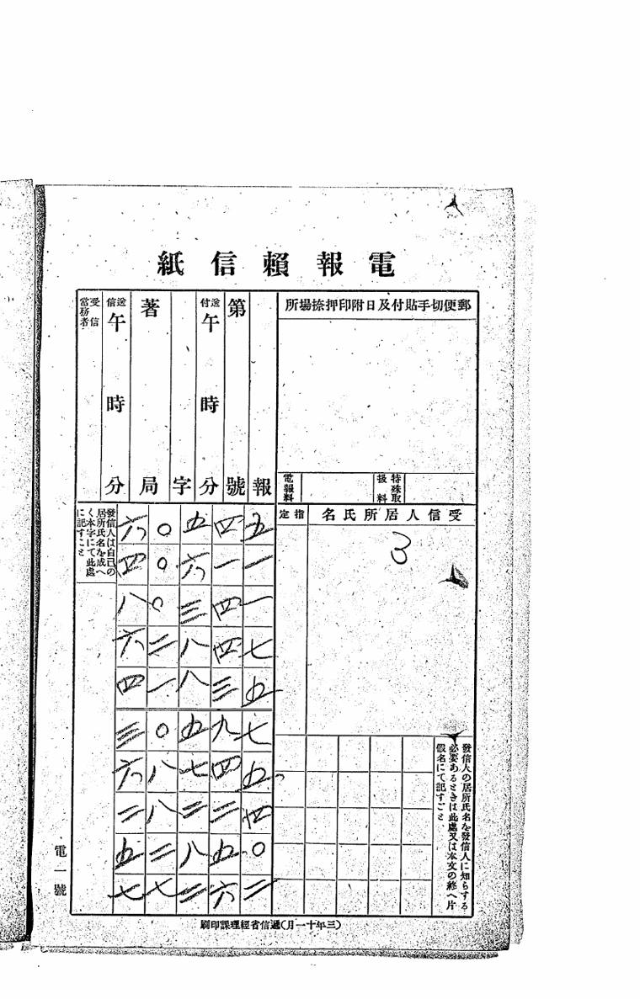
N19b-4 · B03050089300 PDF 28 L · JACAR · scan

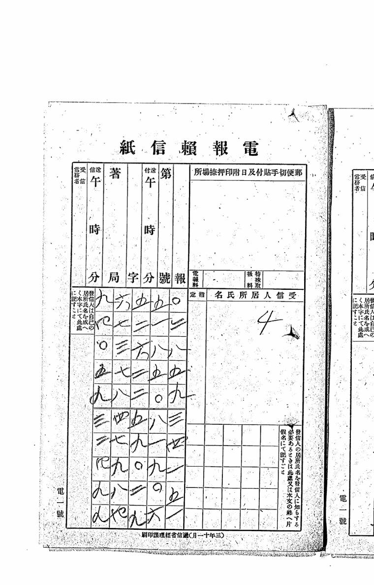
N19b-5 · B03050089300 PDF 29 R · JACAR · scan

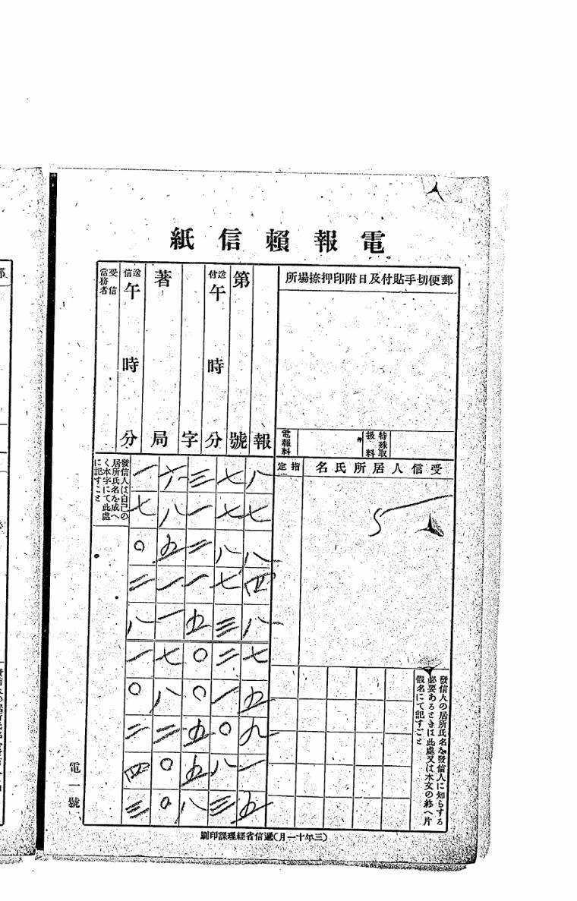
N19b-6 · B03050089300 PDF 29 L · JACAR · scan

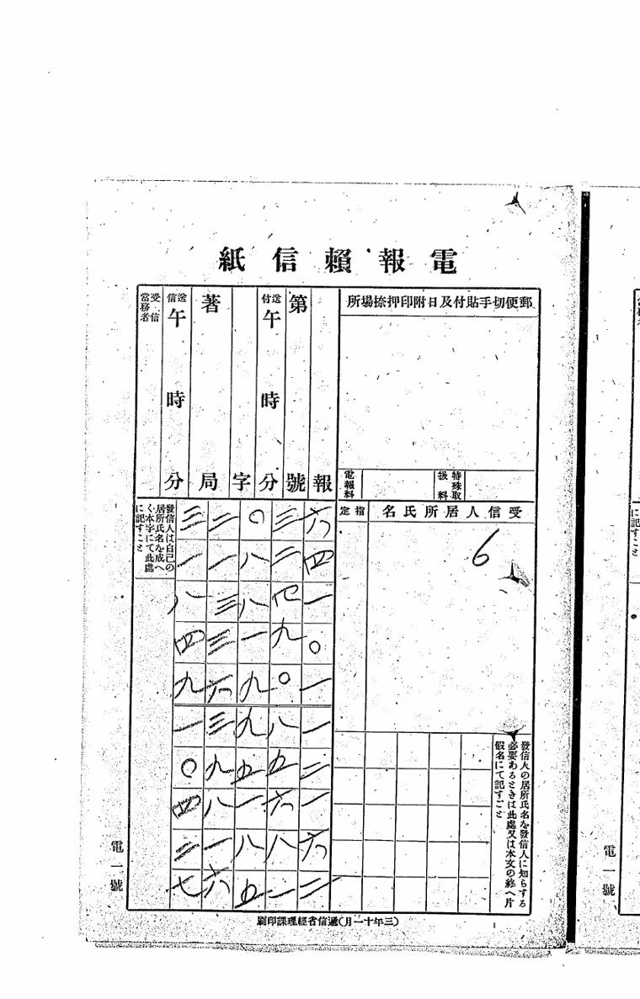
N19b-7 · B03050089300 PDF 30 R · JACAR · scan

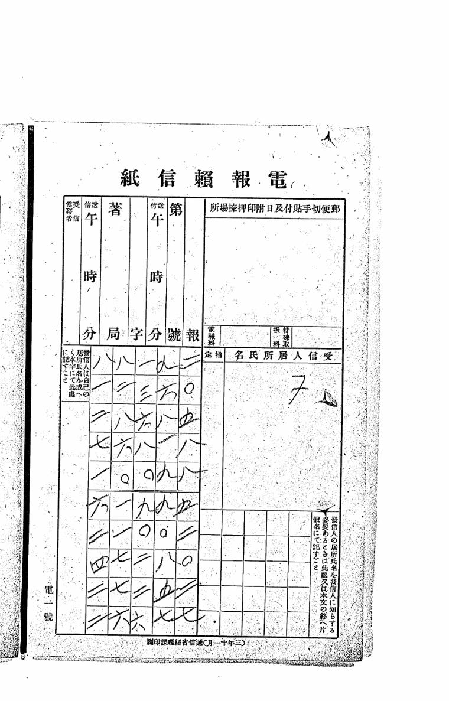
N19b-8 · B03050089300 PDF 30 L · JACAR · scan

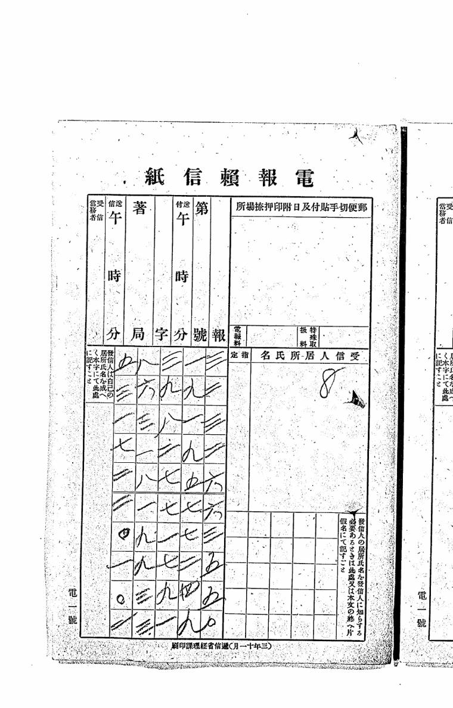
N19b-9 · B03050089300 PDF 31 R · JACAR · scan

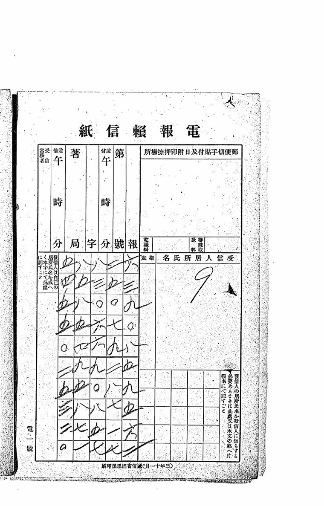
N19b-10 · B03050089300 PDF 31 L · JACAR · scan

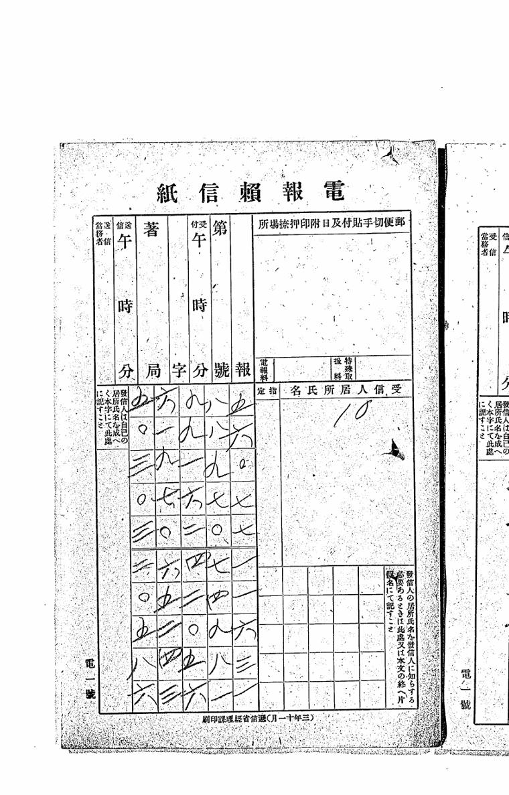
N19b-11 · B03050089300 PDF 32 R · JACAR · scan

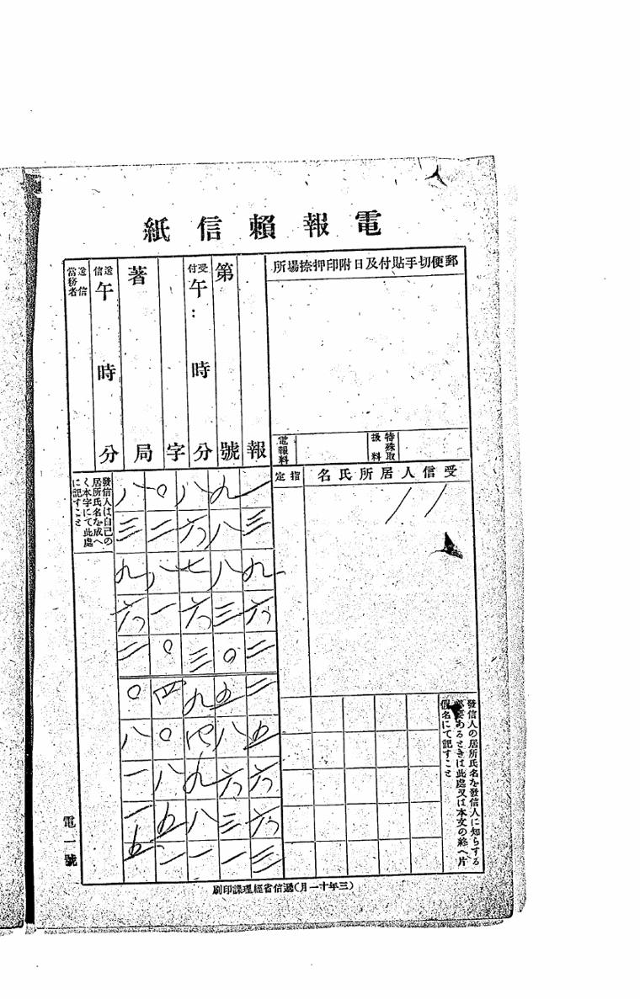
N19b-12 · B03050089300 PDF 32 L · JACAR · scan

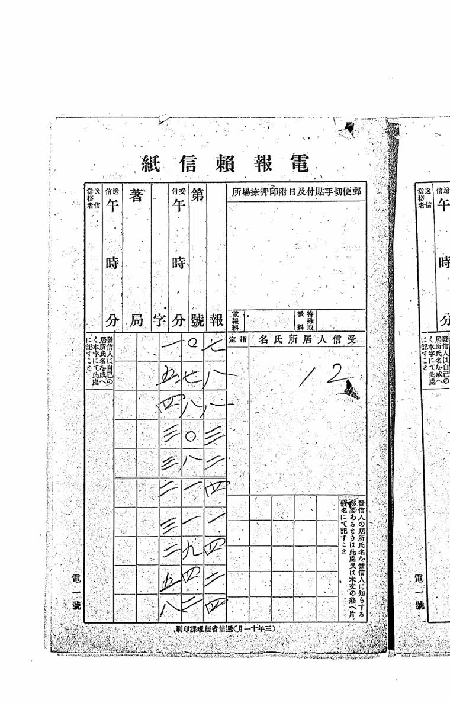
Digits and CTC, group by group
| # | C | CTC | Char. | Sheet |
|---|---|---|---|---|
| prefix | 1369 | 2267 | 掽 | N19b-1 |
| prefix | 1378 | 2256 | 揜 | N19b-1 |
| 1 | 6952 | 7871 | 齊 | N19b-1 |
| 2 | 6277 | 7155 | 隹 | N19b-1 |
| 3 | 6225 | 7193 | 電 | N19b-1 |
| 4 | 0937 | 1885 | 悉 | N19b-1 |
| 5 | 8494 | 0338 | 兄 | N19b-1 |
| 6 | 3635 | 4583 | 等 | N19b-1 |
| 7 | 8192 | 0031 | 主 | N19b-1 |
| 8 | 0844 | 1728 | 張 | N19b-1 |
| 9 | 0965 | 1863 | 恢 | N19b-1 |
| 10 | 0834 | 1788 | 復 | N19b-1 |
| 11 | 4335 | 5283 | 舊 | N19b-1 |
| 12 | 3868 | 4766 | 約 | N19b-2 |
| 13 | 3249 | 4127 | 皽 | N19b-2 |
| 14 | 8786 | 0644 | 及 | N19b-2 |
| 15 | 9084 | 0948 | 國 | N19b-2 |
| 16 | 1637 | 2585 | 會 | N19b-2 |
| 17 | 8119 | 0017 | 並 | N19b-2 |
| 18 | 3801 | 4709 | 籧 | N19b-2 |
| 19 | 4040 | 4930 | 織 | N19b-2 |
| 20 | 1580 | 2450 | 新 | N19b-2 |
| 21 | 8477 | 0355 | 內 | N19b-2 |
| 22 | 6182 | 7041 | 閣 | N19b-2 |
| 23 | 1158 | 2076 | 所 | N19b-2 |
| 24 | 5117 | 6015 | 見 | N19b-3 |
| 25 | 5754 | 6678 | 遠 | N19b-3 |
| 26 | 0241 | 1129 | 大 | N19b-3 |
| 27 | 4439 | 5387 | 若 | N19b-3 |
| 28 | 4256 | 5174 | 能 | N19b-3 |
| 29 | 5638 | 6586 | 辦 | N19b-3 |
| 30 | 8572 | 0451 | 到 | N19b-3 |
| 31 | 8200 | 0110 | 以 | N19b-3 |
| 32 | 0210 | 1120 | 外 | N19b-3 |
| 33 | 8827 | 0795 | 問 | N19b-3 |
| 34 | 6486 | 7344 | 題 | N19b-3 |
| 35 | 4362 | 5261 | 自 | N19b-3 |
| 36 | 5702 | 6601 | 迎 | N19b-3 |
| 37 | 8593 | 0432 | 刃 | N19b-4 |
| 38 | 4151 | 5079 | 而 | N19b-4 |
| 39 | 5185 | 6043 | 解 | N19b-4 |
| 40 | 0819 | 1717 | 弟 | N19b-4 |
| 41 | 0652 | 1571 | 已 | N19b-4 |
| 42 | 6225 | 7193 | 電 | N19b-4 |
| 43 | 9029 | 0997 | 垣 | N19b-4 |
| 44 | 6737 | 7685 | 鳳 | N19b-4 |
| 45 | 8479 | 0357 | 兩 | N19b-4 |
| 46 | 8494 | 0338 | 兄 | N19b-4 |
| 47 | 0593 | 1432 | 就 | N19b-4 |
| 48 | 2499 | 3337 | 滬 | N19b-4 |
| 49 | 8784 | 0648 | 取 | N19b-5 |
| 50 | 8759 | 0677 | 各 | N19b-5 |
| 51 | 1577 | 2455 | 方 | N19b-5 |
| 52 | 8732 | 0681 | 同 | N19b-5 |
| 53 | 1083 | 1942 | 意 | N19b-5 |
| 54 | 3121 | 4099 | 發 | N19b-5 |
| 55 | 5005 | 5903 | 表 | N19b-5 |
| 56 | 5868 | 6766 | 鄙 | N19b-5 |
| 57 | 5117 | 6015 | 見 | N19b-5 |
| 58 | 8200 | 0110 | 以 | N19b-5 |
| 59 | 1702 | 2601 | 期 | N19b-5 |
| 60 | 8102 | 0001 | 一 | N19b-5 |
| 61 | 4364 | 5268 | 致 | N19b-5 |
| 62 | 1011 | 1919 | 惟 | N19b-6 |
| 63 | 2162 | 3061 | 求 | N19b-6 |
| 64 | 3249 | 4127 | 皽 | N19b-6 |
| 65 | 0856 | 1774 | 律 | N19b-6 |
| 66 | 8108 | 0006 | 上 | N19b-6 |
| 67 | 8199 | 0037 | 之 | N19b-6 |
| 68 | 5185 | 6043 | 解 | N19b-6 |
| 69 | 2133 | 3082 | 決 | N19b-6 |
| 70 | 6398 | 7236 | 非 | N19b-6 |
| 71 | 1631 | 2589 | 有 | N19b-6 |
| 72 | 8491 | 0339 | 充 | N19b-6 |
| 73 | 0427 | 1395 | 實 | N19b-6 |
| 74 | 2058 | 2976 | 武 | N19b-7 |
| 75 | 8520 | 0500 | 力 | N19b-7 |
| 76 | 2796 | 3634 | 爲 | N19b-7 |
| 77 | 8199 | 0037 | 之 | N19b-7 |
| 78 | 0857 | 1775 | 後 | N19b-7 |
| 79 | 1368 | 2266 | 援 | N19b-7 |
| 80 | 0902 | 1801 | 必 | N19b-7 |
| 81 | 2682 | 3541 | 無 | N19b-7 |
| 82 | 8601 | 0509 | 効 | N19b-7 |
| 83 | 1776 | 2654 | 果 | N19b-7 |
| 84 | 8127 | 0095 | 仍 | N19b-7 |
| 85 | 1624 | 2598 | 望 | N19b-7 |
| 86 | 2232 | 3181 | 浙 | N19b-7 |
| 87 | 3266 | 4164 | 省 | N19b-8 |
| 88 | 3550 | 4480 | 積 | N19b-8 |
| 89 | 1919 | 2817 | 極 | N19b-8 |
| 90 | 5772 | 6651 | 進 | N19b-8 |
| 91 | 4939 | 5887 | 行 | N19b-8 |
| 92 | 8277 | 0155 | 作 | N19b-8 |
| 93 | 1791 | 2639 | 東 | N19b-8 |
| 94 | 8631 | 0589 | 南 | N19b-8 |
| 95 | 8199 | 0037 | 之 | N19b-8 |
| 96 | 3353 | 4272 | 砥 | N19b-8 |
| 97 | 1722 | 2691 | 柱 | N19b-8 |
| 98 | 0102 | 1001 | 垚 | N19b-8 |
| 99 | 6390 | 7240 | 面 | N19b-9 |
| 100 | 8595 | 0433 | 分 | N19b-9 |
| 101 | 6225 | 7193 | 電 | N19b-9 |
| 102 | 0792 | 1631 | 幹 | N19b-9 |
| 103 | 8717 | 0615 | 卿 | N19b-9 |
| 104 | 8306 | 0204 | 俠 | N19b-9 |
| 105 | 6908 | 7806 | 黃 | N19b-9 |
| 106 | 5785 | 6643 | 速 | N19b-9 |
| 107 | 8549 | 0427 | 出 | N19b-9 |
| 108 | 5871 | 6759 | 鄂 | N19b-9 |
| 109 | 5455 | 6373 | 贛 | N19b-9 |
| 110 | 0253 | 1172 | 如 | N19b-9 |
| 111 | 2056 | 2974 | 此 | N19b-9 |
| 112 | 0771 | 1659 | 庶 | N19b-10 |
| 113 | 1631 | 2589 | 有 | N19b-10 |
| 114 | 8897 | 0735 | 和 | N19b-10 |
| 115 | 0749 | 1627 | 平 | N19b-10 |
| 116 | 8199 | 0037 | 之 | N19b-10 |
| 117 | 1624 | 2598 | 望 | N19b-10 |
| 118 | 2056 | 2974 | 此 | N19b-10 |
| 119 | 6197 | 7035 | 間 | N19b-10 |
| 120 | 0652 | 1571 | 已 | N19b-10 |
| 121 | 4350 | 5280 | 與 | N19b-10 |
| 122 | 3032 | 3981 | 當 | N19b-10 |
| 123 | 0586 | 1444 | 局 | N19b-10 |
| 124 | 1396 | 2234 | 接 | N19b-11 |
| 125 | 2256 | 3174 | 洽 | N19b-11 |
| 126 | 6398 | 7236 | 非 | N19b-11 |
| 127 | 8305 | 0203 | 俟 | N19b-11 |
| 128 | 8631 | 0589 | 南 | N19b-11 |
| 129 | 8676 | 0554 | 北 | N19b-11 |
| 130 | 3949 | 4827 | 統 | N19b-11 |
| 131 | 8102 | 0001 | 一 | N19b-11 |
| 132 | 1104 | 2008 | 憯 | N19b-11 |
| 133 | 0851 | 1779 | 得 | N19b-11 |
| 134 | 8396 | 0234 | 借 | N19b-11 |
| 135 | 2081 | 2949 | 款 | N19b-11 |
| 136 | 1578 | 2456 | 於 | N19b-11 |
| 137 | 1324 | 2298 | 摘 | N19b-12 |
| 138 | 1424 | 2398 | 政 | N19b-12 |
| 139 | 0780 | 1650 | 府 | N19b-12 |
| 140 | 8119 | 0017 | 並 | N19b-12 |
| 141 | 4215 | 5113 | 聞 | N19b-12 |
| 142 | 4332 | 5281 | 興 | N19b-12 |
| 143 | 3258 | 4176 | 真 | N19b-12 |
N02
93 groups · Date: date not read · Direction: Tokyo → Shanghai · 8 sheets · digits re-read by Brice Dudout
Zhang Xiaozhun to the Zhejiang governor: quantities of arms (rifles, mountain guns, machine guns), the Zhejiang and Zhaoqing loans, the wine monopoly.
Raw decoding, uncorrected
轉呂都督步鎗約萬枝山砲可望十餘門機鎗正設皽需款在五十蓐以內淅江借款尚無頭緒需時甚久肇慶借款五百萬不日可拗當局意能先由此五百蓐內撥出購付卽戸徂以起運懇卽電商軍務院並盻覆酒公賣章程乞郵寄孝準
Proposed reading
轉呂都督：步鎗約萬枝，山砲可望十餘門，機鎗正設〔皽〕。需款在五十{萬}以內。{浙}江借款尚無頭緒，需時甚久。肇慶借款五百萬，不日可{成}。當局意能先由此五百{萬}內撥出購付，卽〔戸徂〕以起運。懇卽電商軍務院，並{盼}覆。酒公賣章程乞郵寄。孝準
Translation
To be passed to Governor Lü: rifles, about ten thousand; mountain guns, one may hope for ten or more; machine guns being arranged […]. Funds needed within 500,000. The Zhejiang loan has no lead yet and will take long. The Zhaoqing loan of five million will soon be concluded; the authorities intend first to set aside from these five million the payment for the purchase, then […] ship. Please wire the Military Affairs Council at once to consult, and reply. Please post the regulations of the wine monopoly. — Xiaozhun.
Forms and JACAR sources
N02-1 · B03050089200 PDF 7 L · JACAR · scan

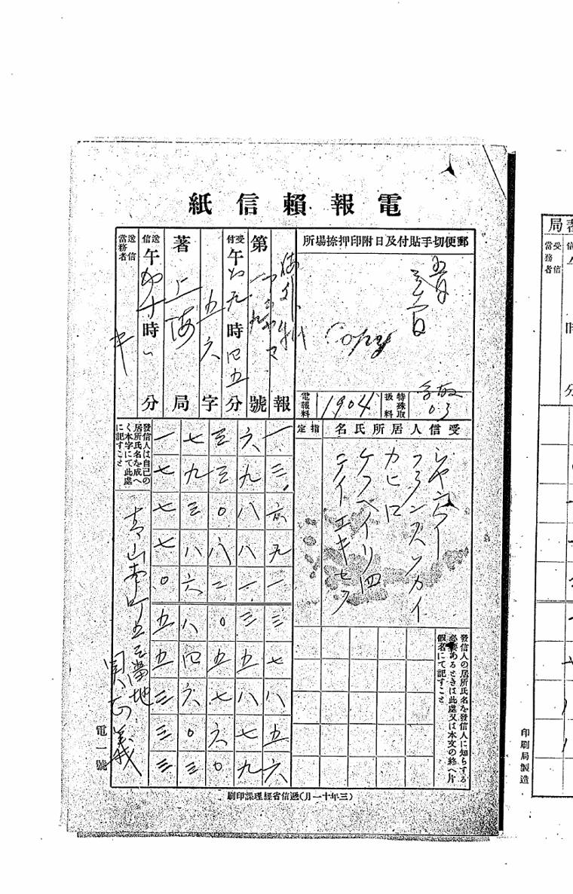
N02-2 · B03050089200 PDF 8 R · JACAR · scan

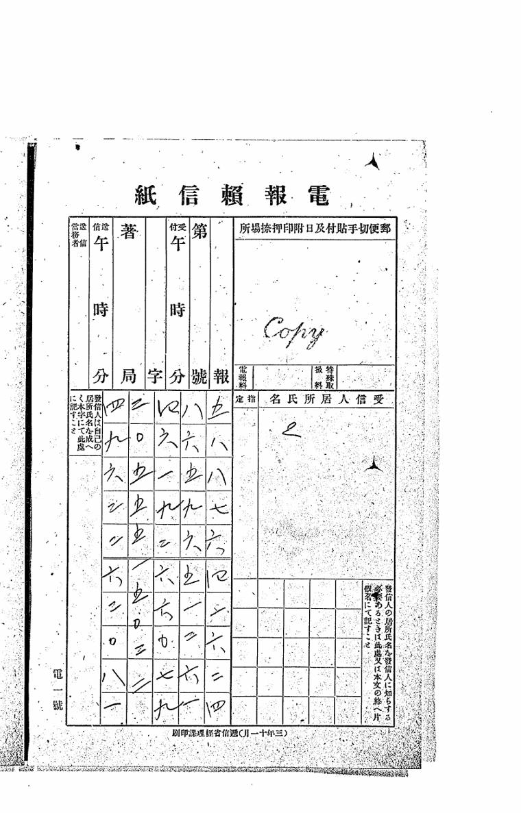
N02-3 · B03050089200 PDF 8 L · JACAR · scan

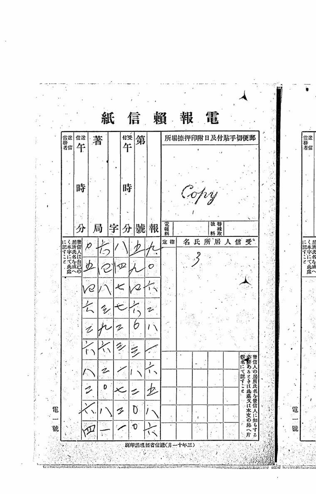
N02-4 · B03050089200 PDF 9 R · JACAR · scan

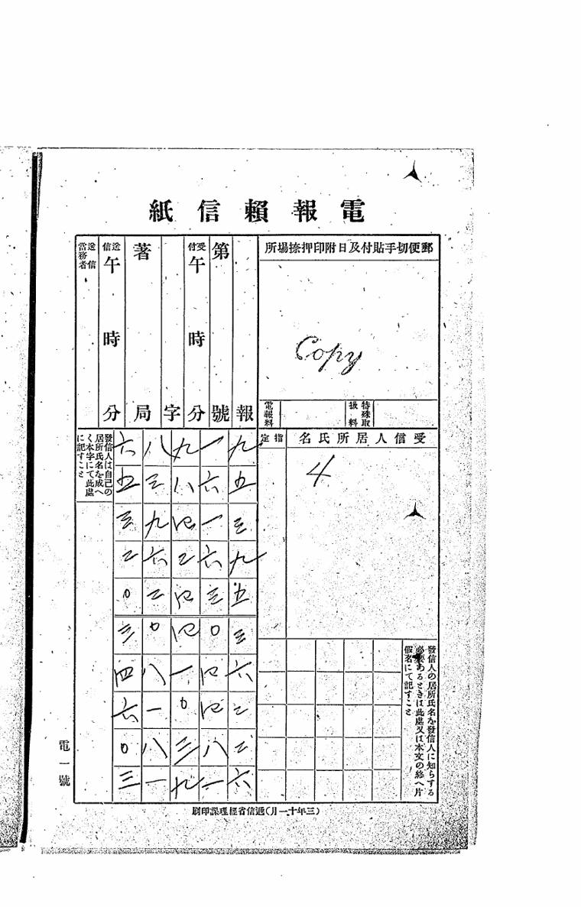
N02-5 · B03050089200 PDF 9 L · JACAR · scan

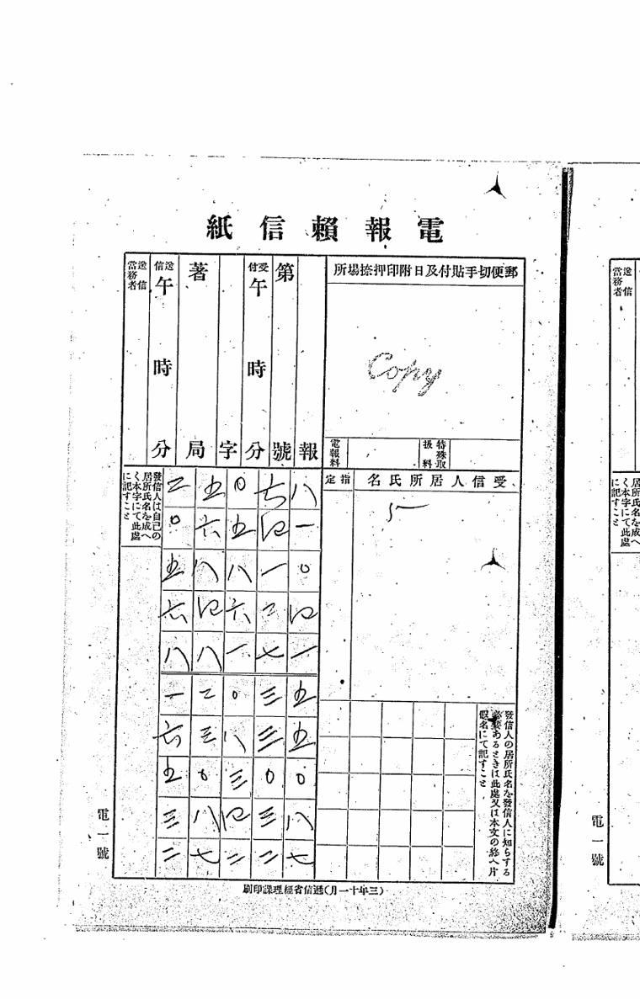
N02-6 · B03050089200 PDF 10 R · JACAR · scan

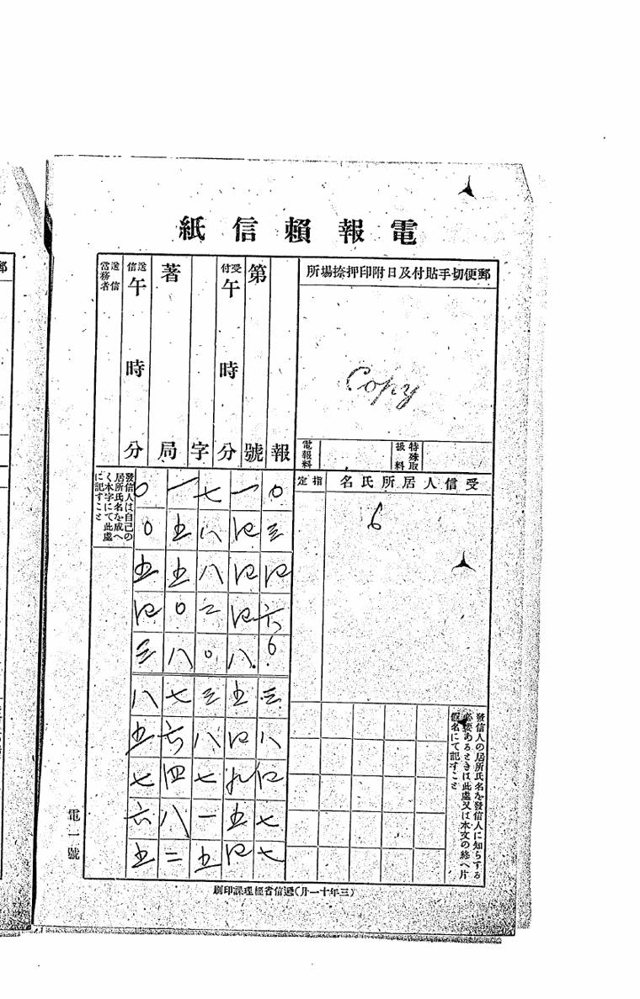
N02-7 · B03050089200 PDF 10 L · JACAR · scan

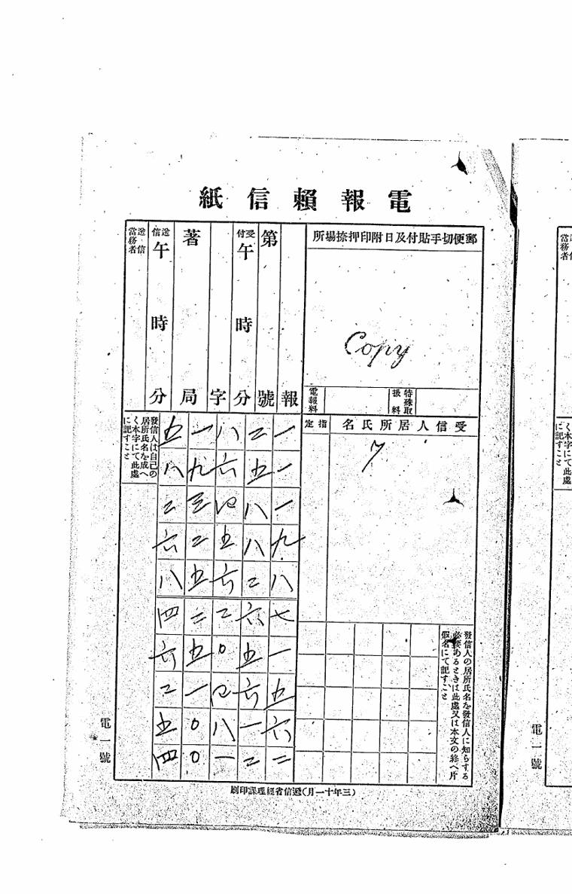
N02-8 · B03050089200 PDF 11 R · JACAR · scan

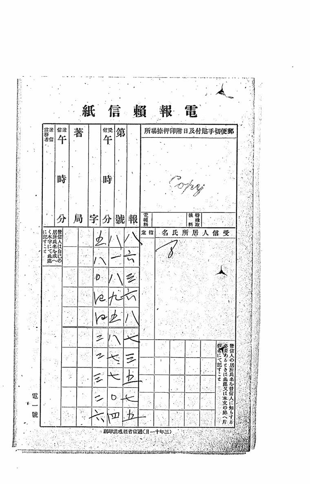
Digits and CTC, group by group
| # | C | CTC | Char. | Sheet |
|---|---|---|---|---|
| prefix | 1369 | 2267 | 掽 | N02-1 |
| prefix | 1378 | 2256 | 揜 | N02-1 |
| 1 | 5669 | 6567 | 轉 | N02-1 |
| 2 | 8813 | 0712 | 呂 | N02-1 |
| 3 | 5879 | 6757 | 都 | N02-1 |
| 4 | 3308 | 4206 | 督 | N02-1 |
| 5 | 2057 | 2975 | 步 | N02-1 |
| 6 | 6079 | 6957 | 鎗 | N02-1 |
| 7 | 3868 | 4766 | 約 | N02-1 |
| 8 | 4603 | 5502 | 萬 | N02-1 |
| 9 | 1777 | 2655 | 枝 | N02-1 |
| 10 | 0553 | 1472 | 山 | N02-1 |
| 11 | 3358 | 4276 | 砲 | N02-1 |
| 12 | 8764 | 0668 | 可 | N02-2 |
| 13 | 1624 | 2598 | 望 | N02-2 |
| 14 | 8659 | 0577 | 十 | N02-2 |
| 15 | 6512 | 7411 | 餘 | N02-2 |
| 16 | 6146 | 7024 | 門 | N02-2 |
| 17 | 1926 | 2894 | 機 | N02-2 |
| 18 | 6079 | 6957 | 鎗 | N02-2 |
| 19 | 2055 | 2973 | 正 | N02-2 |
| 20 | 5150 | 6080 | 設 | N02-2 |
| 21 | 3249 | 4127 | 皽 | N02-2 |
| 22 | 6226 | 7194 | 需 | N02-2 |
| 23 | 2081 | 2949 | 款 | N02-2 |
| 24 | 9062 | 0961 | 在 | N02-3 |
| 25 | 8165 | 0063 | 五 | N02-3 |
| 26 | 8659 | 0577 | 十 | N02-3 |
| 27 | 4663 | 5562 | 蓐 | N02-3 |
| 28 | 8200 | 0110 | 以 | N02-3 |
| 29 | 8477 | 0355 | 內 | N02-3 |
| 30 | 2317 | 3215 | 淅 | N02-3 |
| 31 | 2164 | 3068 | 江 | N02-3 |
| 32 | 8396 | 0234 | 借 | N02-3 |
| 33 | 2081 | 2949 | 款 | N02-3 |
| 34 | 0546 | 1424 | 尚 | N02-3 |
| 35 | 2682 | 3541 | 無 | N02-3 |
| 36 | 6495 | 7333 | 頭 | N02-3 |
| 37 | 3953 | 4872 | 緒 | N02-4 |
| 38 | 6226 | 7194 | 需 | N02-4 |
| 39 | 1616 | 2514 | 時 | N02-4 |
| 40 | 3044 | 3928 | 甚 | N02-4 |
| 41 | 8198 | 0036 | 久 | N02-4 |
| 42 | 4244 | 5128 | 肇 | N02-4 |
| 43 | 1039 | 1987 | 慶 | N02-4 |
| 44 | 8396 | 0234 | 借 | N02-4 |
| 45 | 2081 | 2949 | 款 | N02-4 |
| 46 | 8165 | 0063 | 五 | N02-4 |
| 47 | 3203 | 4102 | 百 | N02-4 |
| 48 | 4603 | 5502 | 萬 | N02-4 |
| 49 | 8104 | 0008 | 不 | N02-5 |
| 50 | 1550 | 2480 | 日 | N02-5 |
| 51 | 8764 | 0668 | 可 | N02-5 |
| 52 | 1273 | 2152 | 拗 | N02-5 |
| 53 | 3032 | 3981 | 當 | N02-5 |
| 54 | 0586 | 1444 | 局 | N02-5 |
| 55 | 1083 | 1942 | 意 | N02-5 |
| 56 | 4256 | 5174 | 能 | N02-5 |
| 57 | 8482 | 0341 | 先 | N02-5 |
| 58 | 3087 | 3945 | 由 | N02-5 |
| 59 | 2056 | 2974 | 此 | N02-5 |
| 60 | 8165 | 0063 | 五 | N02-5 |
| 61 | 3203 | 4102 | 百 | N02-5 |
| 62 | 4663 | 5562 | 蓐 | N02-6 |
| 63 | 8477 | 0355 | 內 | N02-6 |
| 64 | 1444 | 2328 | 撥 | N02-6 |
| 65 | 8549 | 0427 | 出 | N02-6 |
| 66 | 5478 | 6356 | 購 | N02-6 |
| 67 | 8203 | 0102 | 付 | N02-6 |
| 68 | 8715 | 0613 | 卽 | N02-6 |
| 69 | 1155 | 2073 | 戸 | N02-6 |
| 70 | 0864 | 1768 | 徂 | N02-6 |
| 71 | 8200 | 0110 | 以 | N02-6 |
| 72 | 5438 | 6386 | 起 | N02-6 |
| 73 | 5765 | 6663 | 運 | N02-6 |
| 74 | 1119 | 2017 | 懇 | N02-7 |
| 75 | 8715 | 0613 | 卽 | N02-7 |
| 76 | 6225 | 7193 | 電 | N02-7 |
| 77 | 8826 | 0794 | 商 | N02-7 |
| 78 | 5612 | 6511 | 軍 | N02-7 |
| 79 | 8645 | 0523 | 務 | N02-7 |
| 80 | 6204 | 7108 | 院 | N02-7 |
| 81 | 8119 | 0017 | 並 | N02-7 |
| 82 | 3252 | 4171 | 盻 | N02-7 |
| 83 | 5100 | 6010 | 覆 | N02-7 |
| 84 | 5826 | 6794 | 酒 | N02-7 |
| 85 | 8462 | 0361 | 公 | N02-7 |
| 86 | 5486 | 6344 | 賣 | N02-7 |
| 87 | 3687 | 4545 | 章 | N02-8 |
| 88 | 3575 | 4453 | 程 | N02-8 |
| 89 | 8189 | 0047 | 乞 | N02-8 |
| 90 | 5877 | 6755 | 郵 | N02-8 |
| 91 | 0458 | 1376 | 寄 | N02-8 |
| 92 | 0442 | 1321 | 孝 | N02-8 |
| 93 | 2326 | 3294 | 準 | N02-8 |
N08
46 groups · Date: date not read · Direction: Tokyo → Shanghai · 4 sheets · digits re-read by Brice Dudout
Arms purchase and loan: talks under way, secrecy at customs, ammunition.
Raw decoding, uncorrected
電悉購戍款已屢磋商後交大約可辦到爲保秘密此地不檢查子彈數已屢交涉據云隨後可辦借款正加速進行準
Proposed reading
電悉。購{械}款已屢磋商，後交大約可辦到。爲保秘密，此地不檢查。子彈數已屢交涉，據云隨後可辦。借款正加速進行。準
Translation
Telegram received. The funds for buying arms have been discussed several times; deferred delivery can probably be arranged. To keep it secret, there will be no inspection here. The quantity of ammunition has been negotiated several times; they say it can be done afterwards. The loan is being speeded up. — Zhun.
Forms and JACAR sources
N08-1 · B03050089200 PDF 47 R · JACAR · scan

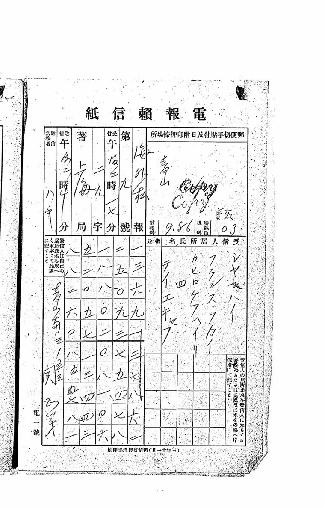
N08-2 · B03050089200 PDF 47 L · JACAR · scan

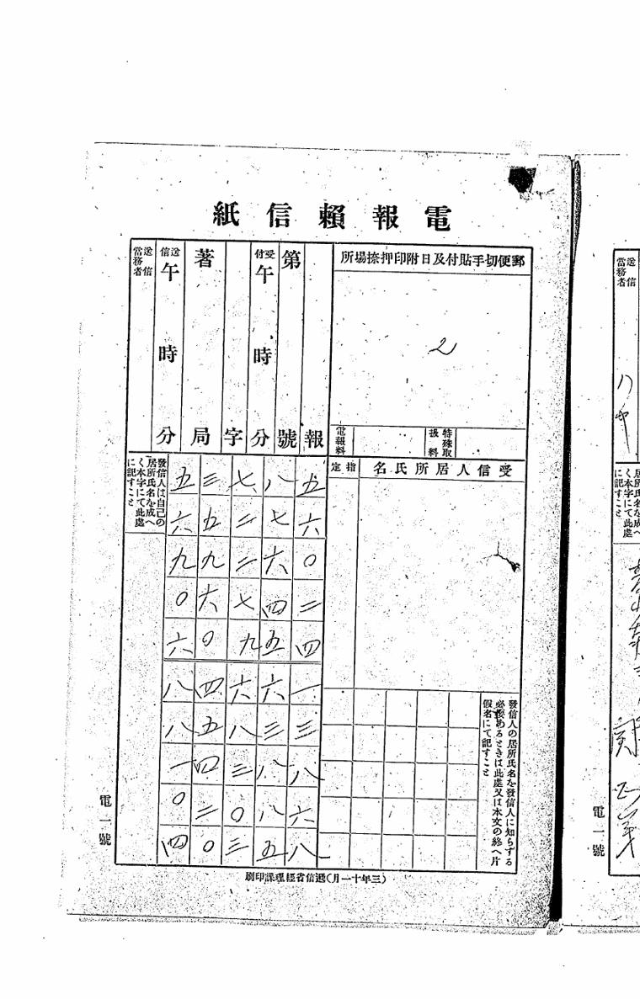
N08-3 · B03050089200 PDF 48 R · JACAR · scan

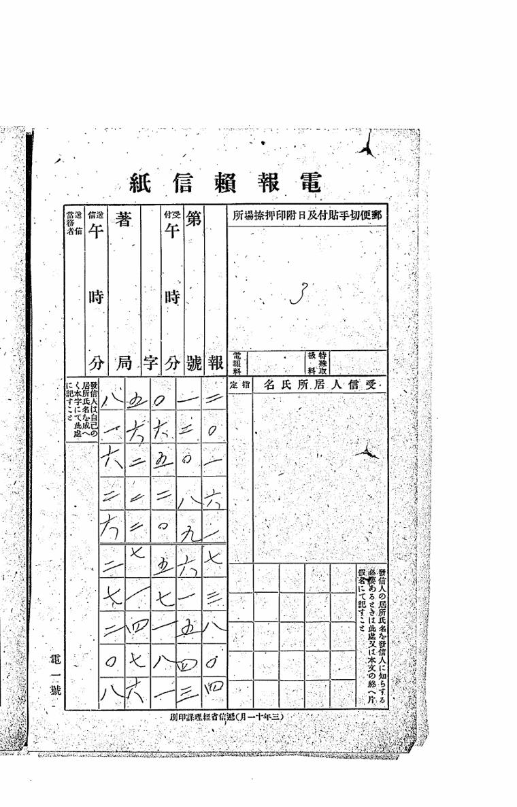
N08-4 · B03050089200 PDF 48 L · JACAR · scan

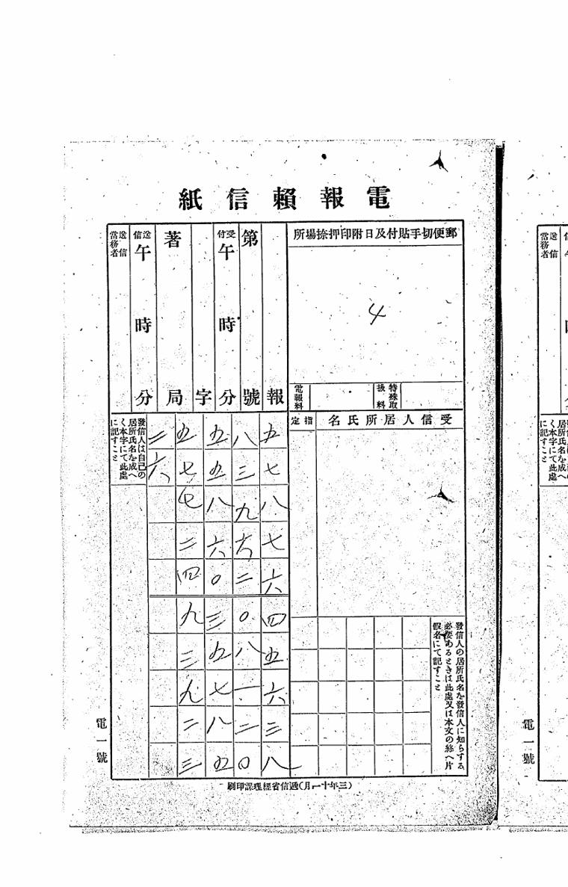
Digits and CTC, group by group
| # | C | CTC | Char. | Sheet |
|---|---|---|---|---|
| prefix | 1369 | 2267 | 掽 | N08-1 |
| prefix | 1378 | 2256 | 揜 | N08-1 |
| 1 | 6225 | 7193 | 電 | N08-1 |
| 2 | 0937 | 1885 | 悉 | N08-1 |
| 3 | 5478 | 6356 | 購 | N08-1 |
| 4 | 1180 | 2050 | 戍 | N08-1 |
| 5 | 2081 | 2949 | 款 | N08-1 |
| 6 | 0652 | 1571 | 已 | N08-1 |
| 7 | 0571 | 1459 | 屢 | N08-1 |
| 8 | 3443 | 4322 | 磋 | N08-1 |
| 9 | 8826 | 0794 | 商 | N08-1 |
| 10 | 0857 | 1775 | 後 | N08-1 |
| 11 | 8156 | 0074 | 交 | N08-1 |
| 12 | 0241 | 1129 | 大 | N08-2 |
| 13 | 3868 | 4766 | 約 | N08-2 |
| 14 | 8764 | 0668 | 可 | N08-2 |
| 15 | 5638 | 6586 | 辦 | N08-2 |
| 16 | 8572 | 0451 | 到 | N08-2 |
| 17 | 2796 | 3634 | 爲 | N08-2 |
| 18 | 8303 | 0202 | 保 | N08-2 |
| 19 | 3596 | 4434 | 秘 | N08-2 |
| 20 | 0454 | 1378 | 密 | N08-2 |
| 21 | 2056 | 2974 | 此 | N08-2 |
| 22 | 9068 | 0966 | 地 | N08-2 |
| 23 | 8104 | 0008 | 不 | N08-2 |
| 24 | 2016 | 2914 | 檢 | N08-3 |
| 25 | 1738 | 2686 | 查 | N08-3 |
| 26 | 0412 | 1311 | 子 | N08-3 |
| 27 | 0896 | 1734 | 彈 | N08-3 |
| 28 | 1543 | 2422 | 數 | N08-3 |
| 29 | 0652 | 1571 | 已 | N08-3 |
| 30 | 0571 | 1459 | 屢 | N08-3 |
| 31 | 8156 | 0074 | 交 | N08-3 |
| 32 | 2227 | 3195 | 涉 | N08-3 |
| 33 | 1476 | 2354 | 據 | N08-3 |
| 34 | 8162 | 0061 | 云 | N08-3 |
| 35 | 6272 | 7151 | 隨 | N08-3 |
| 36 | 0857 | 1775 | 後 | N08-3 |
| 37 | 8764 | 0668 | 可 | N08-4 |
| 38 | 5638 | 6586 | 辦 | N08-4 |
| 39 | 8396 | 0234 | 借 | N08-4 |
| 40 | 2081 | 2949 | 款 | N08-4 |
| 41 | 2055 | 2973 | 正 | N08-4 |
| 42 | 8603 | 0502 | 加 | N08-4 |
| 43 | 5785 | 6643 | 速 | N08-4 |
| 44 | 5772 | 6651 | 進 | N08-4 |
| 45 | 4939 | 5887 | 行 | N08-4 |
| 46 | 2326 | 3294 | 準 | N08-4 |
N11
58 groups · Date: day 8 (庚); month not read · Direction: Tokyo → Shanghai · 5 sheets · digits re-read by Brice Dudout
Zhang Xiaozhun to Huang Qun (溯初): he would like to return to Shanghai but is held in Japan by his business.
Raw decoding, uncorrected
轉溯初先生鑒電悉尊見實第一要着急欲歸滬聆教惟經手事件尚未就緒暫難卬身如承賜教懇隨時密電示知弟力所能及當盡瘁爲之孝準庚
Proposed reading
轉溯初先生鑒：電悉。尊見實第一要着，急欲歸滬聆教，惟經手事件尚未就緒，暫難{抽}身。如承賜教，懇隨時密電示知，弟力所能及，當盡瘁爲之。孝準庚
Translation
To be passed to Mr Suchu: telegram received. Your view is indeed the key point; I would like to return to Shanghai at once to hear your advice, but the business in my hands is not settled and I cannot get away for now. If you wish to advise me, please send secret telegrams at any time; whatever is in my power I will do with all my strength. — Xiaozhun. The 8th.
Forms and JACAR sources
N11-1 · B03050089200 PDF 51 R · JACAR · scan

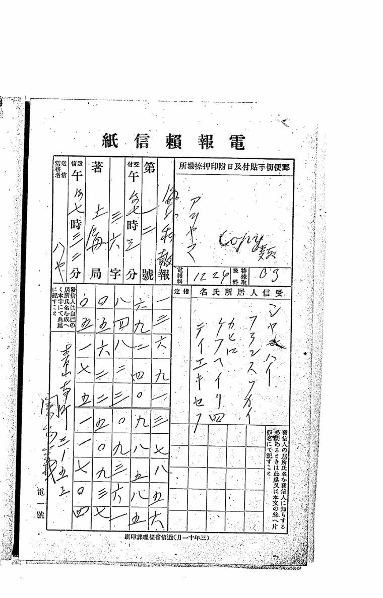
N11-2 · B03050089200 PDF 51 L · JACAR · scan

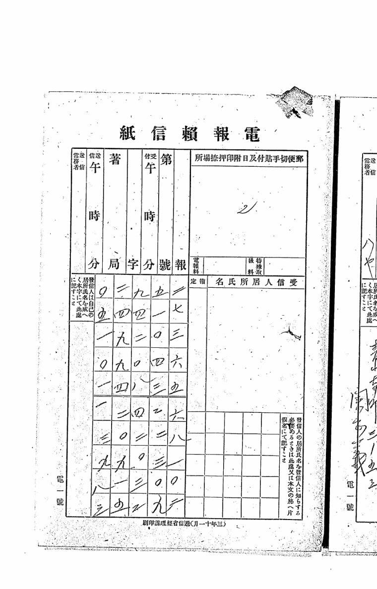
N11-3 · B03050089200 PDF 52 R · JACAR · scan

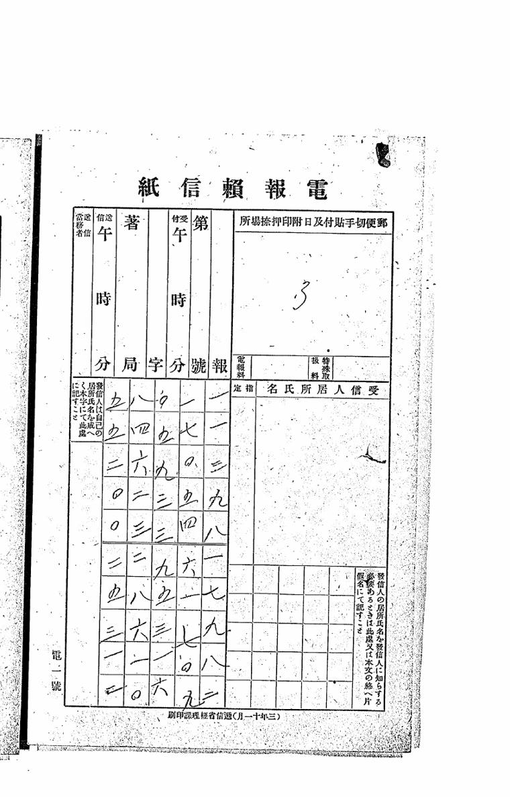
N11-4 · B03050089200 PDF 52 L · JACAR · scan

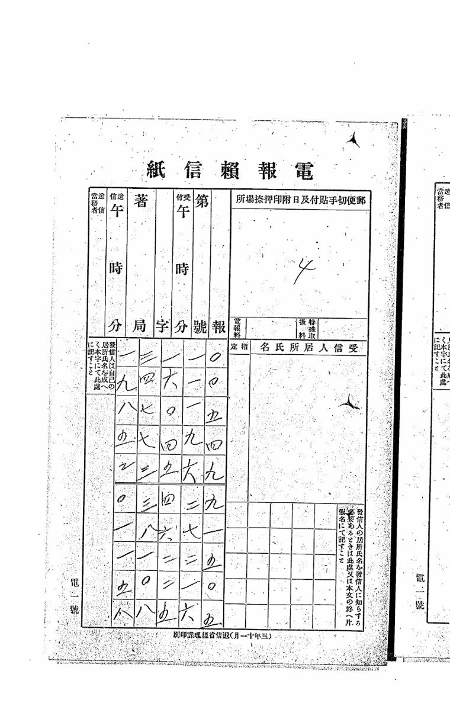
N11-5 · B03050089200 PDF 53 R · JACAR · scan

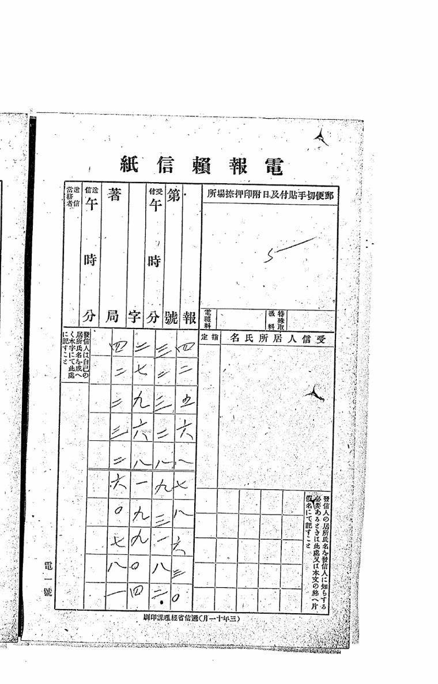
Digits and CTC, group by group
| # | C | CTC | Char. | Sheet |
|---|---|---|---|---|
| prefix | 1369 | 2267 | 掽 | N11-1 |
| prefix | 1378 | 2256 | 揜 | N11-1 |
| 1 | 5669 | 6567 | 轉 | N11-1 |
| 2 | 2409 | 3307 | 溯 | N11-1 |
| 3 | 8585 | 0443 | 初 | N11-1 |
| 4 | 8482 | 0341 | 先 | N11-1 |
| 5 | 3093 | 3932 | 生 | N11-1 |
| 6 | 6105 | 7003 | 鑒 | N11-1 |
| 7 | 6225 | 7193 | 電 | N11-1 |
| 8 | 0937 | 1885 | 悉 | N11-1 |
| 9 | 0517 | 1415 | 尊 | N11-1 |
| 10 | 5117 | 6015 | 見 | N11-1 |
| 11 | 0427 | 1395 | 實 | N11-1 |
| 12 | 3656 | 4574 | 第 | N11-2 |
| 13 | 8102 | 0001 | 一 | N11-2 |
| 14 | 5104 | 6008 | 要 | N11-2 |
| 15 | 3223 | 4192 | 着 | N11-2 |
| 16 | 0994 | 1838 | 急 | N11-2 |
| 17 | 2084 | 2948 | 欲 | N11-2 |
| 18 | 2032 | 2981 | 歸 | N11-2 |
| 19 | 2499 | 3337 | 滬 | N11-2 |
| 20 | 4209 | 5107 | 聆 | N11-2 |
| 21 | 1505 | 2403 | 教 | N11-2 |
| 22 | 1011 | 1919 | 惟 | N11-2 |
| 23 | 3983 | 4842 | 經 | N11-2 |
| 24 | 1139 | 2087 | 手 | N11-3 |
| 25 | 8179 | 0057 | 事 | N11-3 |
| 26 | 8217 | 0115 | 件 | N11-3 |
| 27 | 0546 | 1424 | 尚 | N11-3 |
| 28 | 1709 | 2607 | 未 | N11-3 |
| 29 | 0593 | 1432 | 就 | N11-3 |
| 30 | 3953 | 4872 | 緒 | N11-3 |
| 31 | 1684 | 2548 | 暫 | N11-3 |
| 32 | 6232 | 7181 | 難 | N11-3 |
| 33 | 8620 | 0600 | 卬 | N11-3 |
| 34 | 5520 | 6500 | 身 | N11-3 |
| 35 | 0253 | 1172 | 如 | N11-3 |
| 36 | 1200 | 2110 | 承 | N11-3 |
| 37 | 5499 | 6337 | 賜 | N11-4 |
| 38 | 1505 | 2403 | 教 | N11-4 |
| 39 | 1119 | 2017 | 懇 | N11-4 |
| 40 | 6272 | 7151 | 隨 | N11-4 |
| 41 | 1616 | 2514 | 時 | N11-4 |
| 42 | 0454 | 1378 | 密 | N11-4 |
| 43 | 6225 | 7193 | 電 | N11-4 |
| 44 | 3477 | 4355 | 示 | N11-4 |
| 45 | 3381 | 4249 | 知 | N11-4 |
| 46 | 0819 | 1717 | 弟 | N11-4 |
| 47 | 8520 | 0500 | 力 | N11-4 |
| 48 | 1158 | 2076 | 所 | N11-4 |
| 49 | 4256 | 5174 | 能 | N11-5 |
| 50 | 8786 | 0644 | 及 | N11-5 |
| 51 | 3032 | 3981 | 當 | N11-5 |
| 52 | 3289 | 4147 | 盡 | N11-5 |
| 53 | 3182 | 4041 | 瘁 | N11-5 |
| 54 | 2796 | 3634 | 爲 | N11-5 |
| 55 | 8199 | 0037 | 之 | N11-5 |
| 56 | 0442 | 1321 | 孝 | N11-5 |
| 57 | 2326 | 3294 | 準 | N11-5 |
| 58 | 0781 | 1649 | 庚 | N11-5 |
N12
82 groups · Date: day 8 (庚); month not read · Direction: Tokyo → Shanghai · 7 sheets · digits re-read by Brice Dudout
Arms ready to leave; an intermediary, Yoshikawa, offers a one-million loan; which security to choose.
Raw decoding, uncorrected
並轉丢都督鑒步鎗八蔆□鎗六已準備運送經手人芳川願借款百萬購械檳將來卽由其中扣還抵當品以何者爲佳乞擇二件詳細電示以便擇一與之交涉酒公賣對於百萬小款似不合算盼速覆孝準庚
Proposed reading
並轉{呂}都督鑒：步鎗八〔蔆〕，{機}鎗六〔…〕，已準備運送。經手人芳川願借款百萬購械，〔檳〕將來卽由其中扣還。抵當品以何者爲佳？乞擇二件詳細電示，以便擇一與之交涉。酒公賣對於百萬小款似不合算，盼速覆。孝準庚
Translation
Also to be passed to Governor Lü: rifles, eight […]; machine guns, six […]: ready for shipment. The intermediary Yoshikawa is willing to lend one million to buy arms, to be repaid later out of that sum. Which security is best? Please choose two and wire details, so that I can pick one and negotiate. Pledging the wine monopoly for a small loan of one million does not seem worthwhile. Reply soon. — Xiaozhun. The 8th.
Forms and JACAR sources
N12-1 · B03050089200 PDF 53 L · JACAR · scan

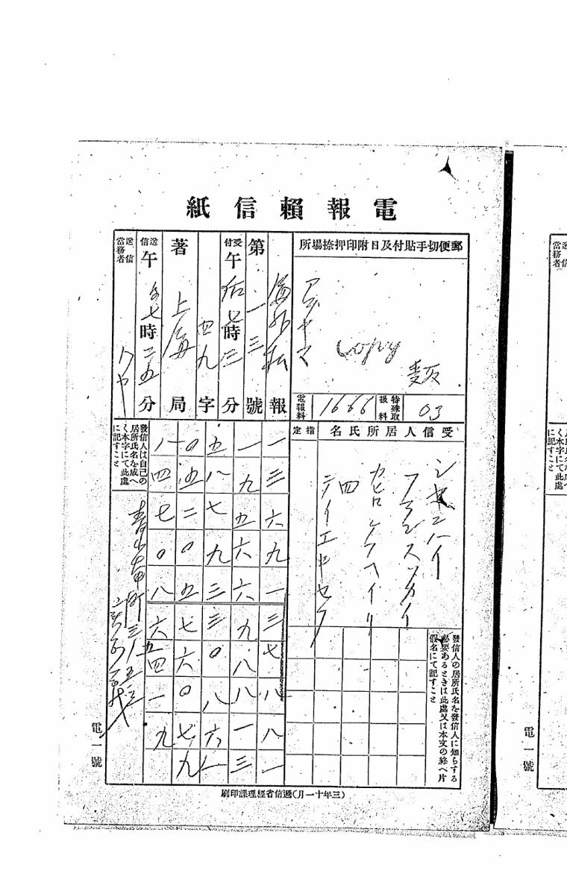
N12-2 · B03050089200 PDF 54 R · JACAR · scan

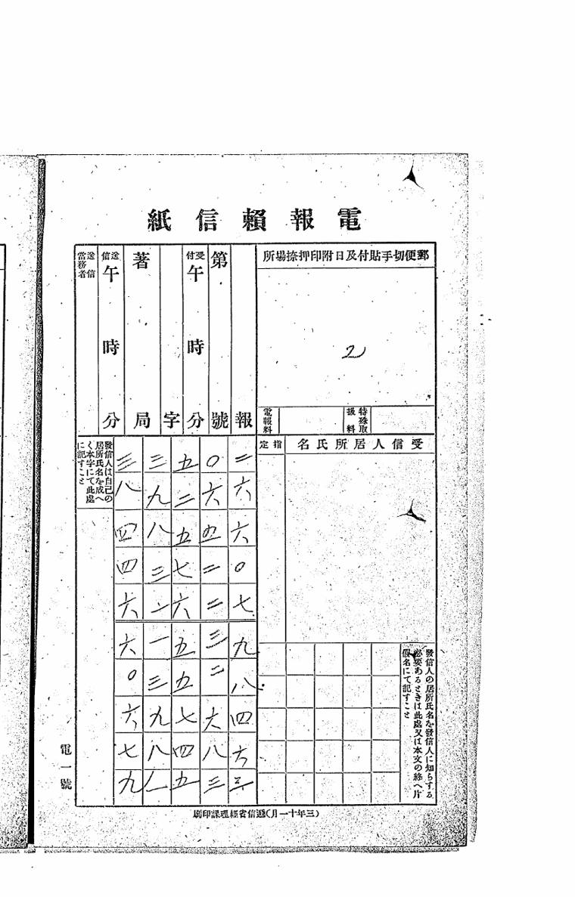
N12-3 · B03050089200 PDF 54 L · JACAR · scan

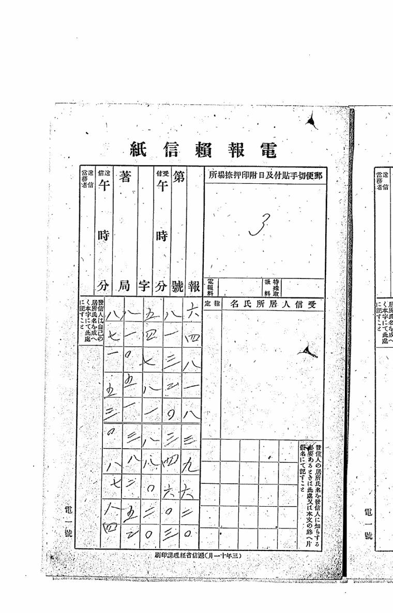
N12-4 · B03050089200 PDF 55 R · JACAR · scan

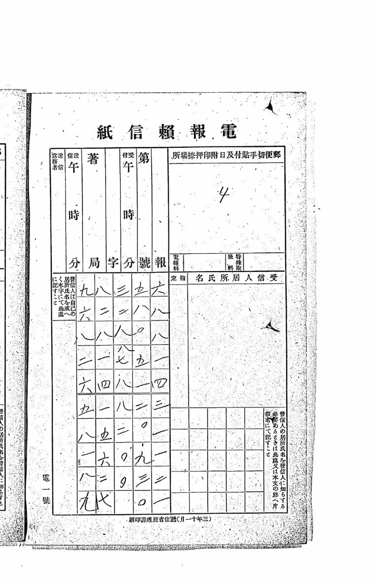
N12-5 · B03050089200 PDF 55 L · JACAR · scan

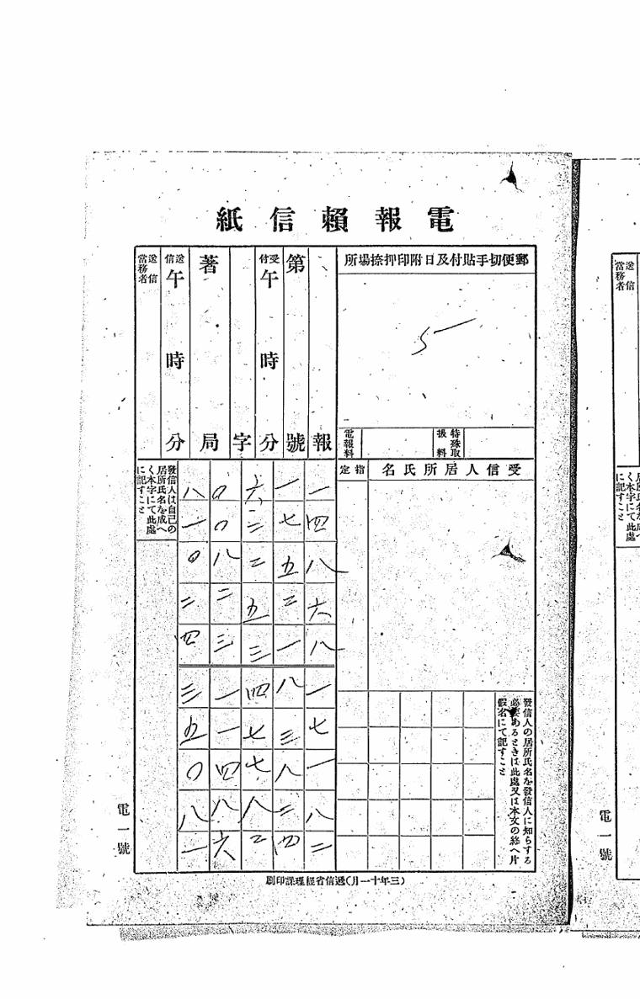
N12-6 · B03050089200 PDF 56 R · JACAR · scan

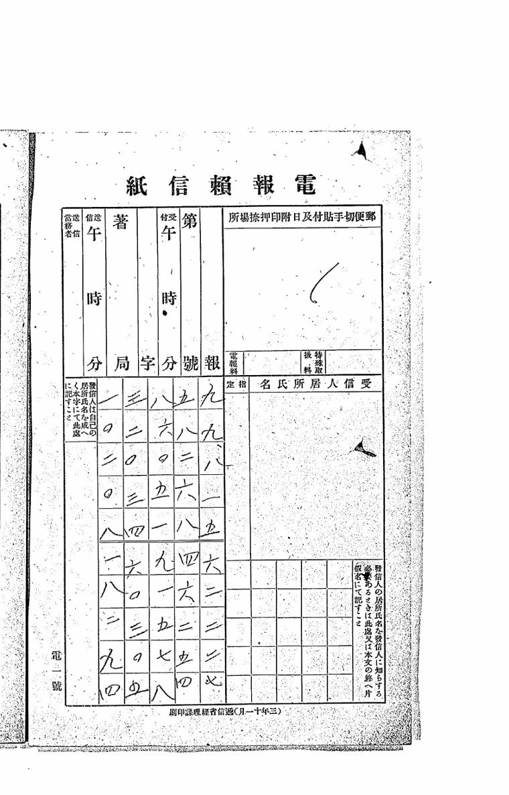
N12-7 · B03050089200 PDF 56 L · JACAR · scan

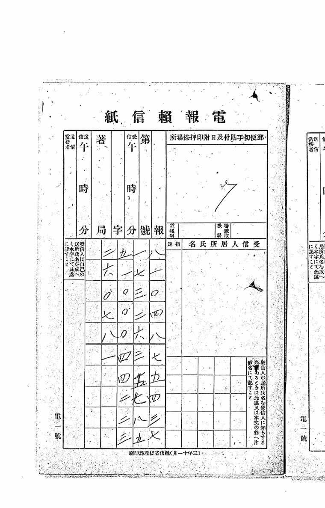
Digits and CTC, group by group
| # | C | CTC | Char. | Sheet |
|---|---|---|---|---|
| prefix | 1369 | 2267 | 掽 | N12-1 |
| prefix | 1378 | 2256 | 揜 | N12-1 |
| 1 | 8119 | 0017 | 並 | N12-1 |
| 2 | 5669 | 6567 | 轉 | N12-1 |
| 3 | 8118 | 0016 | 丢 | N12-1 |
| 4 | 5879 | 6757 | 都 | N12-1 |
| 5 | 3308 | 4206 | 督 | N12-1 |
| 6 | 6105 | 7003 | 鑒 | N12-1 |
| 7 | 2057 | 2975 | 步 | N12-1 |
| 8 | 6079 | 6957 | 鎗 | N12-1 |
| 9 | 8470 | 0360 | 八 | N12-1 |
| 10 | 4651 | 5579 | 蔆 | N12-1 |
| 11 | 9?26 | — | □ | N12-1 |
| 12 | 6079 | 6957 | 鎗 | N12-2 |
| 13 | 8463 | 0362 | 六 | N12-2 |
| 14 | 0652 | 1571 | 已 | N12-2 |
| 15 | 2326 | 3294 | 準 | N12-2 |
| 16 | 8352 | 0271 | 備 | N12-2 |
| 17 | 5765 | 6663 | 運 | N12-2 |
| 18 | 5745 | 6623 | 送 | N12-2 |
| 19 | 3983 | 4842 | 經 | N12-2 |
| 20 | 1139 | 2087 | 手 | N12-2 |
| 21 | 8138 | 0086 | 人 | N12-2 |
| 22 | 4466 | 5364 | 芳 | N12-2 |
| 23 | 0679 | 1557 | 川 | N12-2 |
| 24 | 6481 | 7349 | 願 | N12-3 |
| 25 | 8396 | 0234 | 借 | N12-3 |
| 26 | 2081 | 2949 | 款 | N12-3 |
| 27 | 3203 | 4102 | 百 | N12-3 |
| 28 | 4603 | 5502 | 萬 | N12-3 |
| 29 | 5478 | 6356 | 購 | N12-3 |
| 30 | 1880 | 2750 | 械 | N12-3 |
| 31 | 2011 | 2919 | 檳 | N12-3 |
| 32 | 0513 | 1412 | 將 | N12-3 |
| 33 | 8252 | 0171 | 來 | N12-3 |
| 34 | 8715 | 0613 | 卽 | N12-3 |
| 35 | 3087 | 3945 | 由 | N12-3 |
| 36 | 8468 | 0366 | 其 | N12-3 |
| 37 | 8143 | 0022 | 中 | N12-4 |
| 38 | 1121 | 2099 | 扣 | N12-4 |
| 39 | 5805 | 6703 | 還 | N12-4 |
| 40 | 1209 | 2107 | 抵 | N12-4 |
| 41 | 3032 | 3981 | 當 | N12-4 |
| 42 | 8878 | 0756 | 品 | N12-4 |
| 43 | 8200 | 0110 | 以 | N12-4 |
| 44 | 8281 | 0149 | 何 | N12-4 |
| 45 | 4156 | 5074 | 者 | N12-4 |
| 46 | 2796 | 3634 | 爲 | N12-4 |
| 47 | 8265 | 0163 | 佳 | N12-4 |
| 48 | 8189 | 0047 | 乞 | N12-4 |
| 49 | 1486 | 2344 | 擇 | N12-5 |
| 50 | 8171 | 0059 | 二 | N12-5 |
| 51 | 8217 | 0115 | 件 | N12-5 |
| 52 | 5218 | 6116 | 詳 | N12-5 |
| 53 | 3824 | 4798 | 細 | N12-5 |
| 54 | 6225 | 7193 | 電 | N12-5 |
| 55 | 3477 | 4355 | 示 | N12-5 |
| 56 | 8200 | 0110 | 以 | N12-5 |
| 57 | 8231 | 0189 | 便 | N12-5 |
| 58 | 1486 | 2344 | 擇 | N12-5 |
| 59 | 8102 | 0001 | 一 | N12-5 |
| 60 | 4350 | 5280 | 與 | N12-5 |
| 61 | 8199 | 0037 | 之 | N12-5 |
| 62 | 8156 | 0074 | 交 | N12-6 |
| 63 | 2227 | 3195 | 涉 | N12-6 |
| 64 | 5826 | 6794 | 酒 | N12-6 |
| 65 | 8462 | 0361 | 公 | N12-6 |
| 66 | 5486 | 6344 | 賣 | N12-6 |
| 67 | 0519 | 1417 | 對 | N12-6 |
| 68 | 1578 | 2456 | 於 | N12-6 |
| 69 | 3203 | 4102 | 百 | N12-6 |
| 70 | 4603 | 5502 | 萬 | N12-6 |
| 71 | 0510 | 1420 | 小 | N12-6 |
| 72 | 2081 | 2949 | 款 | N12-6 |
| 73 | 8294 | 0138 | 似 | N12-6 |
| 74 | 8104 | 0008 | 不 | N12-7 |
| 75 | 8754 | 0678 | 合 | N12-7 |
| 76 | 3717 | 4615 | 算 | N12-7 |
| 77 | 3263 | 4162 | 盼 | N12-7 |
| 78 | 5785 | 6643 | 速 | N12-7 |
| 79 | 5100 | 6010 | 覆 | N12-7 |
| 80 | 0442 | 1321 | 孝 | N12-7 |
| 81 | 2326 | 3294 | 準 | N12-7 |
| 82 | 0781 | 1649 | 庚 | N12-7 |
N19a
17 groups · Date: June 11, 1916 ? (inventory) · Direction: Tokyo → Shanghai · 2 sheets · digits re-read by Brice Dudout
To Jiang Fangzhen (百里): asks that a Mr Guan come to Japan.
Raw decoding, uncorrected
轉百里兄不能急盼官君來東一商電覆準
Proposed reading
轉百里兄：不能急，盼官君來東一商。電覆。準
Translation
To be passed to our friend Baili: we cannot hurry; I hope Mr Guan will come to Japan to discuss. Reply by wire. — Zhun.
Forms and JACAR sources
N19a-1 · B03050089300 PDF 26 R · JACAR · scan

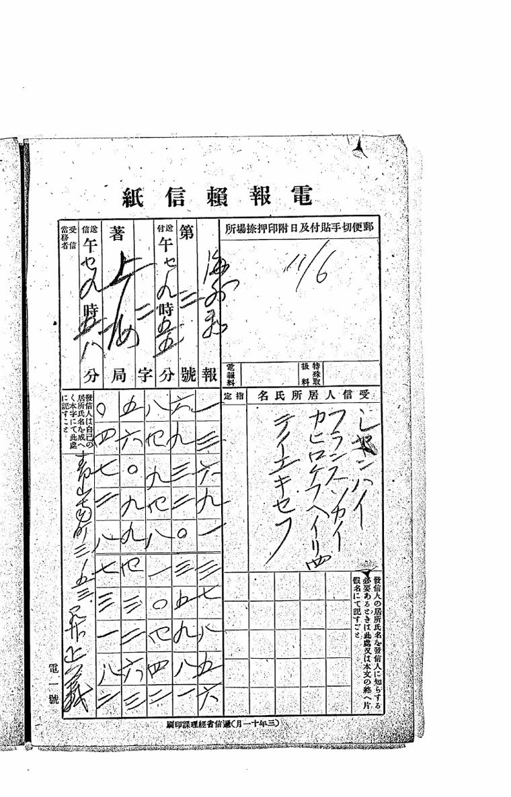
N19a-2 · B03050089300 PDF 26 L · JACAR · scan

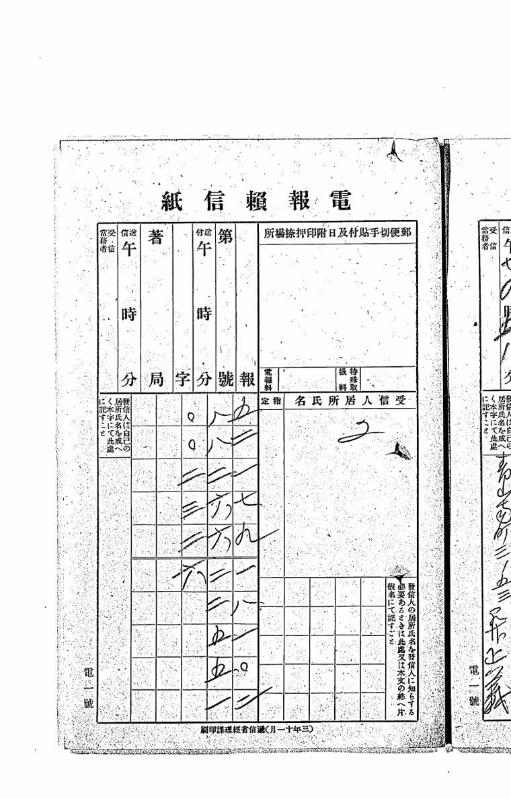
Digits and CTC, group by group
| # | C | CTC | Char. | Sheet |
|---|---|---|---|---|
| prefix | 1369 | 2267 | 掽 | N19a-1 |
| prefix | 1378 | 2256 | 揜 | N19a-1 |
| 1 | 5669 | 6567 | 轉 | N19a-1 |
| 2 | 3203 | 4102 | 百 | N19a-1 |
| 3 | 5981 | 6849 | 里 | N19a-1 |
| 4 | 8494 | 0338 | 兄 | N19a-1 |
| 5 | 8104 | 0008 | 不 | N19a-1 |
| 6 | 4256 | 5174 | 能 | N19a-1 |
| 7 | 0994 | 1838 | 急 | N19a-1 |
| 8 | 3263 | 4162 | 盼 | N19a-1 |
| 9 | 0472 | 1351 | 官 | N19a-1 |
| 10 | 8731 | 0689 | 君 | N19a-1 |
| 11 | 8252 | 0171 | 來 | N19a-1 |
| 12 | 1791 | 2639 | 東 | N19a-2 |
| 13 | 8102 | 0001 | 一 | N19a-2 |
| 14 | 8826 | 0794 | 商 | N19a-2 |
| 15 | 6225 | 7193 | 電 | N19a-2 |
| 16 | 5100 | 6010 | 覆 | N19a-2 |
| 17 | 2326 | 3294 | 準 | N19a-2 |
N28
18 groups · Date: June 14, 1916 · Direction: Tokyo → Shanghai · 2 sheets · digits re-read by Brice Dudout
To Jiang Fangzhen: three hundred raised through Yongyi.
Raw decoding, uncorrected
轉百里兄來電不明已電詠儀籌三百交兄準
Proposed reading
轉百里兄：來電不明。已電詠儀籌三百交兄。準
Translation
To be passed to our friend Baili: your telegram was unclear. I have already wired Yongyi to raise three hundred for you. — Zhun.
Forms and JACAR sources
N28-1 · B03050089400 PDF 32 L · JACAR · scan

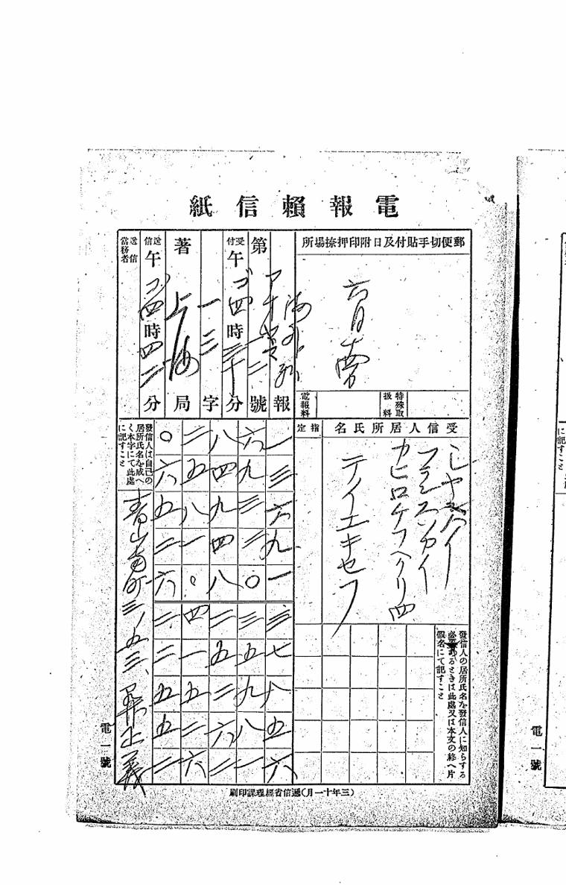
N28-2 · B03050089400 PDF 33 R · JACAR · scan

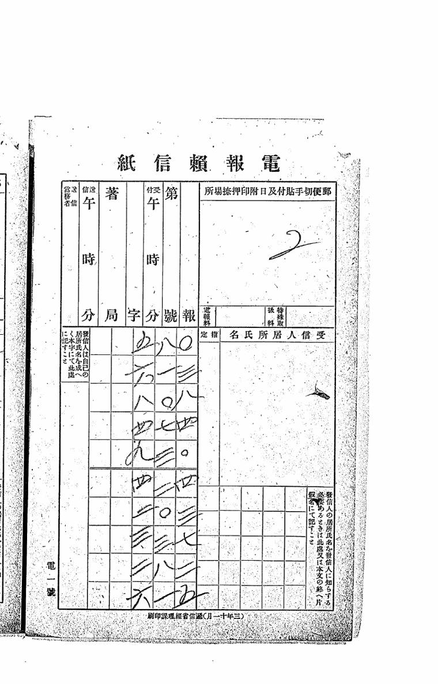
Digits and CTC, group by group
| # | C | CTC | Char. | Sheet |
|---|---|---|---|---|
| prefix | 1369 | 2267 | 掽 | N28-1 |
| prefix | 1378 | 2256 | 揜 | N28-1 |
| 1 | 5669 | 6567 | 轉 | N28-1 |
| 2 | 3203 | 4102 | 百 | N28-1 |
| 3 | 5981 | 6849 | 里 | N28-1 |
| 4 | 8494 | 0338 | 兄 | N28-1 |
| 5 | 8252 | 0171 | 來 | N28-1 |
| 6 | 6225 | 7193 | 電 | N28-1 |
| 7 | 8104 | 0008 | 不 | N28-1 |
| 8 | 1526 | 2494 | 明 | N28-1 |
| 9 | 0652 | 1571 | 已 | N28-1 |
| 10 | 6225 | 7193 | 電 | N28-1 |
| 11 | 5203 | 6102 | 詠 | N28-1 |
| 12 | 8404 | 0308 | 儀 | N28-2 |
| 13 | 3725 | 4693 | 籌 | N28-2 |
| 14 | 8107 | 0005 | 三 | N28-2 |
| 15 | 3203 | 4102 | 百 | N28-2 |
| 16 | 8156 | 0074 | 交 | N28-2 |
| 17 | 8494 | 0338 | 兄 | N28-2 |
| 18 | 2326 | 3294 | 準 | N28-2 |
N21
107 groups · Date: June 13, 1916 · Direction: Shanghai → Tokyo · 9 sheets · digits re-read by Brice Dudout
framing: one digit missing on sheet 1 (inferred from decoding, to check on the scan)
Lü Gongwang’s questions, relayed from Shanghai, on the models and quantities of arms and ammunition.
Raw decoding, uncorrected
浙申□轉致兄電文曰張潤農先生鑒浙用步銃山砲機關銃究係何年式其數各若干砲彈每門銃彈及機關銃彈每挺各若干醅附革具砲上阮屬品馱靄均完備否前來各電于品種晞量均未詳悉且辦法屢易數亦隨異請卽詳細確實電覆至盻呂公望文特聞驪郛恩元
Proposed reading
〔浙申□〕轉致兄電文曰：張潤農先生鑒：浙用步銃、山砲、機關銃究係何年式？其數各若干？砲彈每門、銃彈及機關銃彈每挺各若干？〔醅〕附革具、砲上{附}屬品、馱〔靄〕均完備否？前來各電于品種、{數}量均未詳悉，且辦法屢易，數亦隨異。請卽詳細確實電覆，至{盼}。呂公望 文特聞。驪郛恩元
Translation
[…] Text of the telegram to be passed on: To Mr Zhang Runnong: the rifles, mountain guns and machine guns for Zhejiang — of what model exactly, and how many of each? How many shells per gun, cartridges per rifle and per machine gun? Are the leather equipment, gun accessories and pack gear all complete? Earlier telegrams did not give types and quantities, and the arrangements changed often, the numbers with them. Please wire full and exact details at once. — Lü Gongwang, the 12th. For information. — Li, Fu, En. The 13th.
Forms and JACAR sources
N21-1 · B03050089400 PDF 6 R · JACAR · scan

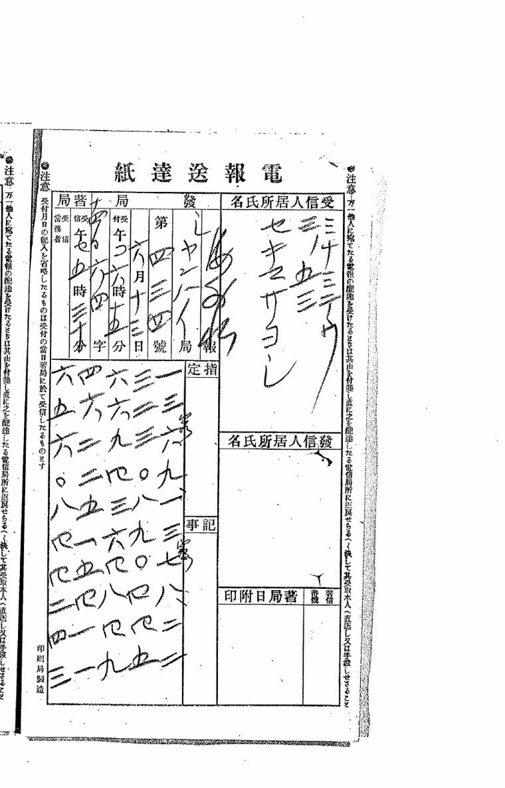
N21-2 · B03050089400 PDF 6 L · JACAR · scan

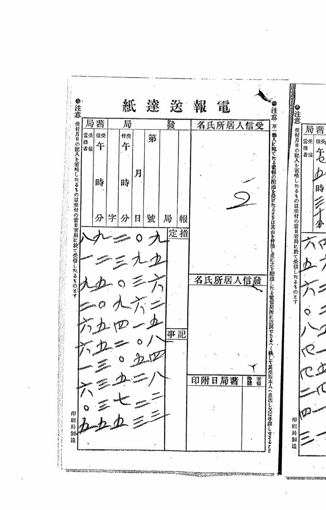
N21-3 · B03050089400 PDF 7 R · JACAR · scan

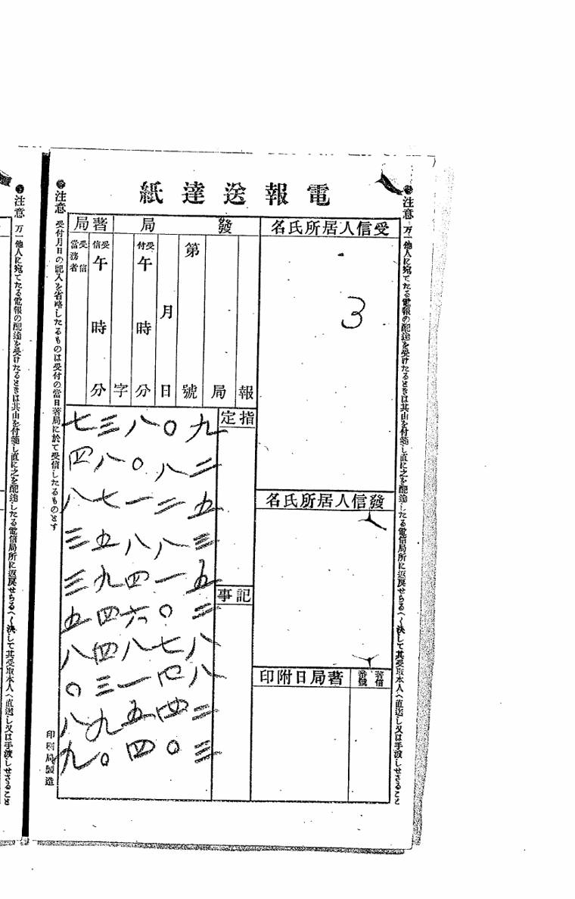
N21-4 · B03050089400 PDF 7 L · JACAR · scan

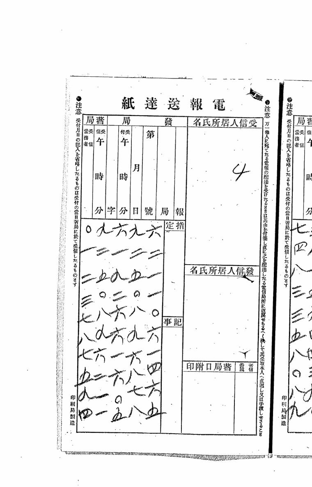
N21-5 · B03050089400 PDF 8 R · JACAR · scan

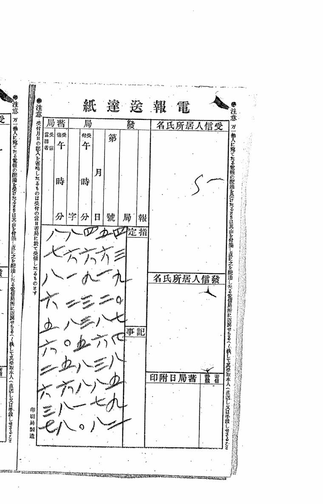
N21-6 · B03050089400 PDF 8 L · JACAR · scan

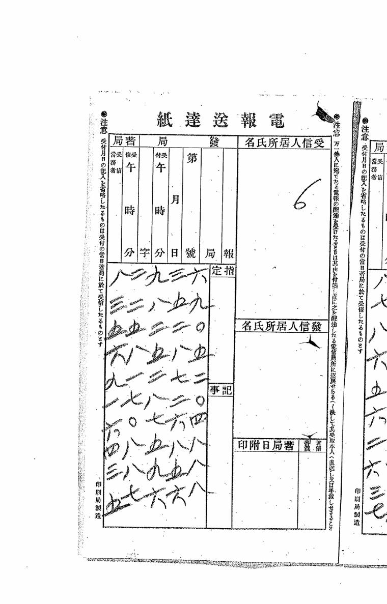
N21-7 · B03050089400 PDF 9 R · JACAR · scan


Digits and CTC, group by group
| # | C | CTC | Char. | Sheet |
|---|---|---|---|---|
| prefix | 1369 | 2267 | 掽 | N21-1 |
| prefix | 1378 | 2256 | 揜 | N21-1 |
| 1 | 2232 | 3181 | 浙 | N21-1 |
| 2 | 3089 | 3947 | 申 | N21-1 |
| 3 | 044? | — | □ | N21-1 |
| 4 | 5669 | 6567 | 轉 | N21-1 |
| 5 | 4364 | 5268 | 致 | N21-1 |
| 6 | 8494 | 0338 | 兄 | N21-1 |
| 7 | 6225 | 7193 | 電 | N21-1 |
| 8 | 1541 | 2429 | 文 | N21-1 |
| 9 | 1656 | 2574 | 曰 | N21-1 |
| 10 | 0844 | 1728 | 張 | N21-1 |
| 11 | 2439 | 3387 | 潤 | N21-1 |
| 12 | 5625 | 6593 | 農 | N21-2 |
| 13 | 8482 | 0341 | 先 | N21-2 |
| 14 | 3093 | 3932 | 生 | N21-2 |
| 15 | 6105 | 7003 | 鑒 | N21-2 |
| 16 | 2232 | 3181 | 浙 | N21-2 |
| 17 | 3094 | 3938 | 用 | N21-2 |
| 18 | 2057 | 2975 | 步 | N21-2 |
| 19 | 5925 | 6893 | 銃 | N21-2 |
| 20 | 0553 | 1472 | 山 | N21-2 |
| 21 | 3358 | 4276 | 砲 | N21-2 |
| 22 | 1926 | 2894 | 機 | N21-2 |
| 23 | 6160 | 7070 | 關 | N21-2 |
| 24 | 5925 | 6893 | 銃 | N21-2 |
| 25 | 3528 | 4496 | 究 | N21-3 |
| 26 | 8230 | 0190 | 係 | N21-3 |
| 27 | 8281 | 0149 | 何 | N21-3 |
| 28 | 0744 | 1628 | 年 | N21-3 |
| 29 | 0801 | 1709 | 式 | N21-3 |
| 30 | 8468 | 0366 | 其 | N21-3 |
| 31 | 1543 | 2422 | 數 | N21-3 |
| 32 | 8759 | 0677 | 各 | N21-3 |
| 33 | 4439 | 5387 | 若 | N21-3 |
| 34 | 0748 | 1626 | 干 | N21-3 |
| 35 | 3358 | 4276 | 砲 | N21-3 |
| 36 | 0896 | 1734 | 彈 | N21-3 |
| 37 | 2110 | 3020 | 每 | N21-4 |
| 38 | 6146 | 7024 | 門 | N21-4 |
| 39 | 5925 | 6893 | 銃 | N21-4 |
| 40 | 0896 | 1734 | 彈 | N21-4 |
| 41 | 8786 | 0644 | 及 | N21-4 |
| 42 | 1926 | 2894 | 機 | N21-4 |
| 43 | 6160 | 7070 | 關 | N21-4 |
| 44 | 5925 | 6893 | 銃 | N21-4 |
| 45 | 0896 | 1734 | 彈 | N21-4 |
| 46 | 2110 | 3020 | 每 | N21-4 |
| 47 | 1237 | 2185 | 挺 | N21-4 |
| 48 | 8759 | 0677 | 各 | N21-4 |
| 49 | 4439 | 5387 | 若 | N21-4 |
| 50 | 0748 | 1626 | 干 | N21-5 |
| 51 | 5915 | 6813 | 醅 | N21-5 |
| 52 | 6128 | 7096 | 附 | N21-5 |
| 53 | 6387 | 7245 | 革 | N21-5 |
| 54 | 8469 | 0367 | 具 | N21-5 |
| 55 | 3358 | 4276 | 砲 | N21-5 |
| 56 | 8108 | 0006 | 上 | N21-5 |
| 57 | 6138 | 7086 | 阮 | N21-5 |
| 58 | 0568 | 1466 | 屬 | N21-5 |
| 59 | 8878 | 0756 | 品 | N21-5 |
| 60 | 6562 | 7461 | 馱 | N21-5 |
| 61 | 6346 | 7224 | 靄 | N21-5 |
| 62 | 9052 | 0971 | 均 | N21-6 |
| 63 | 0488 | 1346 | 完 | N21-6 |
| 64 | 8352 | 0271 | 備 | N21-6 |
| 65 | 8726 | 0694 | 否 | N21-6 |
| 66 | 8569 | 0467 | 前 | N21-6 |
| 67 | 8252 | 0171 | 來 | N21-6 |
| 68 | 8759 | 0677 | 各 | N21-6 |
| 69 | 6225 | 7193 | 電 | N21-6 |
| 70 | 8170 | 0060 | 于 | N21-6 |
| 71 | 8878 | 0756 | 品 | N21-6 |
| 72 | 3569 | 4467 | 種 | N21-6 |
| 73 | 1643 | 2522 | 晞 | N21-6 |
| 74 | 5973 | 6852 | 量 | N21-6 |
| 75 | 9052 | 0971 | 均 | N21-7 |
| 76 | 1709 | 2607 | 未 | N21-7 |
| 77 | 5218 | 6116 | 詳 | N21-7 |
| 78 | 0937 | 1885 | 悉 | N21-7 |
| 79 | 8112 | 0011 | 且 | N21-7 |
| 80 | 5638 | 6586 | 辦 | N21-7 |
| 81 | 2249 | 3127 | 法 | N21-7 |
| 82 | 0571 | 1459 | 屢 | N21-7 |
| 83 | 1528 | 2496 | 易 | N21-7 |
| 84 | 1543 | 2422 | 數 | N21-7 |
| 85 | 8158 | 0076 | 亦 | N21-7 |
| 86 | 6272 | 7151 | 隨 | N21-7 |
| 87 | 3058 | 3976 | 異 | N21-8 |
| 88 | 5275 | 6153 | 請 | N21-8 |
| 89 | 8715 | 0613 | 卽 | N21-8 |
| 90 | 5218 | 6116 | 詳 | N21-8 |
| 91 | 3824 | 4798 | 細 | N21-8 |
| 92 | 3417 | 4315 | 確 | N21-8 |
| 93 | 0427 | 1395 | 實 | N21-8 |
| 94 | 6225 | 7193 | 電 | N21-8 |
| 95 | 5100 | 6010 | 覆 | N21-8 |
| 96 | 4369 | 5267 | 至 | N21-8 |
| 97 | 3252 | 4171 | 盻 | N21-8 |
| 98 | 8813 | 0712 | 呂 | N21-8 |
| 99 | 8462 | 0361 | 公 | N21-8 |
| 100 | 1624 | 2598 | 望 | N21-9 |
| 101 | 1541 | 2429 | 文 | N21-9 |
| 102 | 2758 | 3676 | 特 | N21-9 |
| 103 | 4215 | 5113 | 聞 | N21-9 |
| 104 | 6699 | 7537 | 驪 | N21-9 |
| 105 | 5886 | 6744 | 郛 | N21-9 |
| 106 | 0961 | 1869 | 恩 | N21-9 |
| 107 | 8499 | 0337 | 元 | N21-9 |
N25
113 groups · Date: June 14, 1916 ? (inventory) · Direction: Shanghai → Tokyo · 10 sheets · digits re-read by Brice Dudout
The securities offered by Zhejiang (tobacco and wine taxes); Wu Zhaolian sent to Japan.
Raw decoding, uncorrected
頃得呂睢來電曰烟捐全年比較數約二十八萬烟酒牌捐税全年庫收約十四萬以上二項擬可爲一種据押品至酒捐全年收入約九十萬似覺不宜均希與前途酌辦以上各項均圩紩酒公賣賟外特聲明並盻覆云云特聞又浙睢已派吳兆蓮君赴日與公接洽□切到乞賜教驪郛恩收
Proposed reading
頃得呂{督}來電曰：烟捐全年比較數約二十八萬；烟酒牌捐税全年庫收約十四萬以上；二項擬可爲一種{抵}押品。至酒捐全年收入約九十萬，似覺不宜。均希與前途酌辦。以上各項均〔圩紩〕酒公賣〔賟〕外，特聲明，並{盼}覆云云。特聞。又浙{督}已派吳兆蓮君赴日與公接洽，〔□〕切到乞賜教。驪郛恩〔收〕
Translation
We have just received from Governor Lü a telegram saying: the tobacco tax yields about 280,000 a year; the tobacco and wine licence taxes bring the treasury more than 140,000 a year; these two items could serve as security. The wine tax, about 900,000 a year, does not seem suitable; please settle with the other party. The items above […] apart from the wine monopoly; we state this expressly and await a reply, etc. For information. Also, the Zhejiang governor has sent Mr Wu Zhaolian to Japan to meet you; please advise him on arrival. — Li, Fu, En. […]
Forms and JACAR sources
N25-1 · B03050089400 PDF 24 R · JACAR · scan

N25-2 · B03050089400 PDF 24 L · JACAR · scan

N25-3 · B03050089400 PDF 25 R · JACAR · scan

N25-4 · B03050089400 PDF 25 L · JACAR · scan

N25-5 · B03050089400 PDF 26 R · JACAR · scan

N25-6 · B03050089400 PDF 26 L · JACAR · scan

N25-7 · B03050089400 PDF 27 R · JACAR · scan

N25-8 · B03050089400 PDF 27 L · JACAR · scan


Digits and CTC, group by group
| # | C | CTC | Char. | Sheet |
|---|---|---|---|---|
| prefix | 1369 | 2267 | 掽 | N25-1 |
| prefix | 1378 | 2256 | 揜 | N25-1 |
| 1 | 6404 | 7308 | 頃 | N25-1 |
| 2 | 0851 | 1779 | 得 | N25-1 |
| 3 | 8813 | 0712 | 呂 | N25-1 |
| 4 | 3307 | 4205 | 睢 | N25-1 |
| 5 | 8252 | 0171 | 來 | N25-1 |
| 6 | 6225 | 7193 | 電 | N25-1 |
| 7 | 1656 | 2574 | 曰 | N25-1 |
| 8 | 2695 | 3533 | 烟 | N25-1 |
| 9 | 1228 | 2196 | 捐 | N25-1 |
| 10 | 8478 | 0356 | 全 | N25-1 |
| 11 | 0744 | 1628 | 年 | N25-1 |
| 12 | 2146 | 3024 | 比 | N25-2 |
| 13 | 5647 | 6525 | 較 | N25-2 |
| 14 | 1543 | 2422 | 數 | N25-2 |
| 15 | 3868 | 4766 | 約 | N25-2 |
| 16 | 8171 | 0059 | 二 | N25-2 |
| 17 | 8659 | 0577 | 十 | N25-2 |
| 18 | 8470 | 0360 | 八 | N25-2 |
| 19 | 4603 | 5502 | 萬 | N25-2 |
| 20 | 2695 | 3533 | 烟 | N25-2 |
| 21 | 5826 | 6794 | 酒 | N25-2 |
| 22 | 2776 | 3654 | 牌 | N25-2 |
| 23 | 1228 | 2196 | 捐 | N25-2 |
| 24 | 3572 | 4451 | 税 | N25-3 |
| 25 | 8478 | 0356 | 全 | N25-3 |
| 26 | 0744 | 1628 | 年 | N25-3 |
| 27 | 0777 | 1655 | 庫 | N25-3 |
| 28 | 1423 | 2392 | 收 | N25-3 |
| 29 | 3868 | 4766 | 約 | N25-3 |
| 30 | 8659 | 0577 | 十 | N25-3 |
| 31 | 9096 | 0934 | 四 | N25-3 |
| 32 | 4603 | 5502 | 萬 | N25-3 |
| 33 | 8200 | 0110 | 以 | N25-3 |
| 34 | 8108 | 0006 | 上 | N25-3 |
| 35 | 8171 | 0059 | 二 | N25-3 |
| 36 | 6401 | 7309 | 項 | N25-3 |
| 37 | 1463 | 2362 | 擬 | N25-4 |
| 38 | 8764 | 0668 | 可 | N25-4 |
| 39 | 2796 | 3634 | 爲 | N25-4 |
| 40 | 8102 | 0001 | 一 | N25-4 |
| 41 | 3569 | 4467 | 種 | N25-4 |
| 42 | 1309 | 2207 | 据 | N25-4 |
| 43 | 1292 | 2131 | 押 | N25-4 |
| 44 | 8878 | 0756 | 品 | N25-4 |
| 45 | 4369 | 5267 | 至 | N25-4 |
| 46 | 5826 | 6794 | 酒 | N25-4 |
| 47 | 1228 | 2196 | 捐 | N25-4 |
| 48 | 8478 | 0356 | 全 | N25-4 |
| 49 | 0744 | 1628 | 年 | N25-5 |
| 50 | 1423 | 2392 | 收 | N25-5 |
| 51 | 8476 | 0354 | 入 | N25-5 |
| 52 | 3868 | 4766 | 約 | N25-5 |
| 53 | 8188 | 0046 | 九 | N25-5 |
| 54 | 8659 | 0577 | 十 | N25-5 |
| 55 | 4603 | 5502 | 萬 | N25-5 |
| 56 | 8294 | 0138 | 似 | N25-5 |
| 57 | 5140 | 6030 | 覺 | N25-5 |
| 58 | 8104 | 0008 | 不 | N25-5 |
| 59 | 0477 | 1355 | 宜 | N25-5 |
| 60 | 9052 | 0971 | 均 | N25-5 |
| 61 | 0637 | 1585 | 希 | N25-5 |
| 62 | 4350 | 5280 | 與 | N25-6 |
| 63 | 8569 | 0467 | 前 | N25-6 |
| 64 | 5796 | 6634 | 途 | N25-6 |
| 65 | 5822 | 6791 | 酌 | N25-6 |
| 66 | 5638 | 6586 | 辦 | N25-6 |
| 67 | 8200 | 0110 | 以 | N25-6 |
| 68 | 8108 | 0006 | 上 | N25-6 |
| 69 | 8759 | 0677 | 各 | N25-6 |
| 70 | 6401 | 7309 | 項 | N25-6 |
| 71 | 9052 | 0971 | 均 | N25-6 |
| 72 | 9063 | 0962 | 圩 | N25-6 |
| 73 | 3826 | 4794 | 紩 | N25-6 |
| 74 | 5826 | 6794 | 酒 | N25-7 |
| 75 | 8462 | 0361 | 公 | N25-7 |
| 76 | 5486 | 6344 | 賣 | N25-7 |
| 77 | 5481 | 6349 | 賟 | N25-7 |
| 78 | 0210 | 1120 | 外 | N25-7 |
| 79 | 2758 | 3676 | 特 | N25-7 |
| 80 | 4218 | 5116 | 聲 | N25-7 |
| 81 | 1526 | 2494 | 明 | N25-7 |
| 82 | 8119 | 0017 | 並 | N25-7 |
| 83 | 3252 | 4171 | 盻 | N25-7 |
| 84 | 5100 | 6010 | 覆 | N25-7 |
| 85 | 8162 | 0061 | 云 | N25-7 |
| 86 | 8162 | 0061 | 云 | N25-7 |
| 87 | 2758 | 3676 | 特 | N25-8 |
| 88 | 4215 | 5113 | 聞 | N25-8 |
| 89 | 8783 | 0642 | 又 | N25-8 |
| 90 | 2232 | 3181 | 浙 | N25-8 |
| 91 | 3307 | 4205 | 睢 | N25-8 |
| 92 | 0652 | 1571 | 已 | N25-8 |
| 93 | 2257 | 3175 | 派 | N25-8 |
| 94 | 8803 | 0702 | 吳 | N25-8 |
| 95 | 8490 | 0340 | 兆 | N25-8 |
| 96 | 4652 | 5571 | 蓮 | N25-8 |
| 97 | 8731 | 0689 | 君 | N25-8 |
| 98 | 5436 | 6384 | 赴 | N25-8 |
| 99 | 1550 | 2480 | 日 | N25-9 |
| 100 | 4350 | 5280 | 與 | N25-9 |
| 101 | 8462 | 0361 | 公 | N25-9 |
| 102 | 1396 | 2234 | 接 | N25-9 |
| 103 | 2256 | 3174 | 洽 | N25-9 |
| 104 | 8012 | 9911 | □ | N25-9 |
| 105 | 8596 | 0434 | 切 | N25-9 |
| 106 | 8572 | 0451 | 到 | N25-9 |
| 107 | 8189 | 0047 | 乞 | N25-9 |
| 108 | 5499 | 6337 | 賜 | N25-9 |
| 109 | 1505 | 2403 | 教 | N25-9 |
| 110 | 6699 | 7537 | 驪 | N25-9 |
| 111 | 5886 | 6744 | 郛 | N25-9 |
| 112 | 0961 | 1869 | 恩 | N25-10 |
| 113 | 1423 | 2392 | 收 | N25-10 |
N36
58 groups · Date: June 16, 1916 · Direction: Shanghai → Tokyo · 5 sheets · digits re-read by Brice Dudout
Lü Gongwang to Huang Xing and Zhang Xiaozhun: ship the arms quickly, payment before 30 June.
Raw decoding, uncorrected
黃克強先繒張滕農先繒均鑒吵兆蓮厫計巷昭東械樨速運如儿鍠不戚代價准于椰年六月三十日以前由浙備鍠付靠不悞盻騙速進行公望銑
Proposed reading
黃克強先{生}、張{潤}農先{生}均鑒：{吳}兆蓮{君}〔計巷昭〕東械〔樨〕速運，〔如儿〕{款}〔不戚〕代價准于〔椰〕年六月三十日以前由浙備{款}付，〔靠〕不悞。{盼}〔騙〕速進行。公望銑
Translation
To Mr Huang Keqiang and Mr Zhang Runnong: Mr Wu Zhaolian […] the arms from Japan […] to be shipped quickly […] funds […]. The price will be paid by Zhejiang before 30 June of this year, without fail. We hope it moves quickly. — Gongwang. The 16th.
Forms and JACAR sources
N36-1 · B03050089500 PDF 6 L · JACAR · scan

N36-2 · B03050089500 PDF 7 R · JACAR · scan

N36-3 · B03050089500 PDF 7 L · JACAR · scan


Digits and CTC, group by group
| # | C | CTC | Char. | Sheet |
|---|---|---|---|---|
| prefix | 1369 | 2267 | 掽 | N36-1 |
| prefix | 1378 | 2256 | 揜 | N36-1 |
| 1 | 6908 | 7806 | 黃 | N36-1 |
| 2 | 8486 | 0344 | 克 | N36-1 |
| 3 | 0840 | 1730 | 強 | N36-1 |
| 4 | 8482 | 0341 | 先 | N36-1 |
| 5 | 4094 | 4938 | 繒 | N36-1 |
| 6 | 0844 | 1728 | 張 | N36-1 |
| 7 | 2448 | 3326 | 滕 | N36-1 |
| 8 | 5625 | 6593 | 農 | N36-1 |
| 9 | 8482 | 0341 | 先 | N36-1 |
| 10 | 4094 | 4938 | 繒 | N36-1 |
| 11 | 9052 | 0971 | 均 | N36-1 |
| 12 | 6105 | 7003 | 鑒 | N36-2 |
| 13 | 8805 | 0703 | 吵 | N36-2 |
| 14 | 8490 | 0340 | 兆 | N36-2 |
| 15 | 4652 | 5571 | 蓮 | N36-2 |
| 16 | 8741 | 0629 | 厫 | N36-2 |
| 17 | 5170 | 6060 | 計 | N36-2 |
| 18 | 0656 | 1574 | 巷 | N36-2 |
| 19 | 1609 | 2507 | 昭 | N36-2 |
| 20 | 1791 | 2639 | 東 | N36-2 |
| 21 | 1880 | 2750 | 械 | N36-2 |
| 22 | 1924 | 2898 | 樨 | N36-2 |
| 23 | 5785 | 6643 | 速 | N36-2 |
| 24 | 5765 | 6663 | 運 | N36-3 |
| 25 | 0253 | 1172 | 如 | N36-3 |
| 26 | 8496 | 0334 | 儿 | N36-3 |
| 27 | 6081 | 6949 | 鍠 | N36-3 |
| 28 | 8104 | 0008 | 不 | N36-3 |
| 29 | 1174 | 2058 | 戚 | N36-3 |
| 30 | 8204 | 0108 | 代 | N36-3 |
| 31 | 8407 | 0305 | 價 | N36-3 |
| 32 | 8503 | 0402 | 准 | N36-3 |
| 33 | 8170 | 0060 | 于 | N36-3 |
| 34 | 1826 | 2794 | 椰 | N36-3 |
| 35 | 0744 | 1628 | 年 | N36-3 |
| 36 | 8463 | 0362 | 六 | N36-3 |
| 37 | 1634 | 2588 | 月 | N36-4 |
| 38 | 8107 | 0005 | 三 | N36-4 |
| 39 | 8659 | 0577 | 十 | N36-4 |
| 40 | 1550 | 2480 | 日 | N36-4 |
| 41 | 8200 | 0110 | 以 | N36-4 |
| 42 | 8569 | 0467 | 前 | N36-4 |
| 43 | 3087 | 3945 | 由 | N36-4 |
| 44 | 2232 | 3181 | 浙 | N36-4 |
| 45 | 8352 | 0271 | 備 | N36-4 |
| 46 | 6081 | 6949 | 鍠 | N36-4 |
| 47 | 8203 | 0102 | 付 | N36-4 |
| 48 | 6399 | 7237 | 靠 | N36-4 |
| 49 | 8104 | 0008 | 不 | N36-5 |
| 50 | 0934 | 1888 | 悞 | N36-5 |
| 51 | 3252 | 4171 | 盻 | N36-5 |
| 52 | 6521 | 7499 | 騙 | N36-5 |
| 53 | 5785 | 6643 | 速 | N36-5 |
| 54 | 5772 | 6651 | 進 | N36-5 |
| 55 | 4939 | 5887 | 行 | N36-5 |
| 56 | 8462 | 0361 | 公 | N36-5 |
| 57 | 1624 | 2598 | 望 | N36-5 |
| 58 | 5929 | 6897 | 銑 | N36-5 |
N24
200 groups · Date: header not read; after 9 June · Direction: Shanghai → Tokyo · 17 sheets · digits re-read by Brice Dudout
framing: one digit too many on sheet 16 (inferred from decoding, to check on the scan)
Report from Shanghai to Huang Xing: conditions set to Beijing (repeal of Yuan’s laws, 1912 Constitution), Tang Hualong’s departure.
Raw decoding, uncorrected
轉黃克強先生鑒佳日黎電硏囑海上巨公入京贊助滠日唐宅開會初議公請濟武九峯溥泉靜生四人以個人名義入京主持其主張同佳電所陳後經再三硏究決定先由唐湯去電略謂盛意至感但非下令取消袁逆偽法實行遵照元年約法暫不入京云云今斌張國淦由京電梁硏謂約法復舊芝已贊速電遲辦盻速接洽電到卽可宣佈宗孰奉元首派赴寧並可面陳一切南方獨立各省乞通電亟謀統一機不可失密電已弛禁併聞云云湯改定於今晚赴京特聞垣鳳兩兄常晤殷汝驪葛敬恩黃郛叩攴
Proposed reading
轉黃克強先生鑒：佳日黎電〔硏〕囑海上巨公入京贊助。〔滠〕日唐宅開會，初議公請濟武、九峯、溥泉、靜生四人以個人名義入京主持，其主張同佳電所陳。後經再三硏究，決定先由唐、湯去電，略謂：盛意至感，但非下令取消袁逆僞法，實行遵照元年約法，暫不入京云云。今〔斌〕張國淦由京電梁〔硏〕，謂約法復舊，芝已贊，速電遲辦，{盼}速接洽。電到卽可宣佈。〔宗孰〕奉元首派赴寧，並可面陳一切。南方獨立各省乞通電亟謀統一，機不可失。密電已弛禁。併聞云云。湯改定於今晚赴京。特聞。垣、鳳兩兄常晤。殷汝驪、葛敬恩、黃郛叩〔攴〕
Translation
To be passed to Mr Huang Keqiang: on the 9th President Li wired asking the eminent men of Shanghai to come to Beijing and help. On the […] a meeting was held at Tang’s house. It was first proposed to ask four men, Jiwu, Jiufeng, Puquan and Jingsheng, to go to Beijing in their personal capacity and take charge, their position being that of the telegram of the 9th. After much study it was decided that Tang and Tang would first wire, saying in substance: “We are deeply grateful, but unless an order abolishes the traitor Yuan’s illegitimate laws and restores the Provisional Constitution of the first year, we will not come to Beijing for now.” Today Zhang Guogan wired Liang from Beijing that the return to the old Constitution has Zhi’s approval; […]; we hope for quick contact. Once the telegram arrives it can be announced. […], sent by the head of State to Nanjing, can explain everything in person. Let the independent southern provinces issue a circular telegram and seek unification at once: the chance must not be lost. The ban on cipher telegrams has been lifted. For your information, etc. Tang has decided to leave for Beijing tonight. For information. We often see our two friends Yuan and Feng. — Yin Ruli, Ge Jing’en, Huang Fu. […]
Forms and JACAR sources
N24-1 · B03050089400 PDF 15 L · JACAR · scan

N24-2 · B03050089400 PDF 16 R · JACAR · scan

N24-3 · B03050089400 PDF 16 L · JACAR · scan

N24-4 · B03050089400 PDF 17 R · JACAR · scan

N24-5 · B03050089400 PDF 17 L · JACAR · scan

N24-6 · B03050089400 PDF 18 R · JACAR · scan

N24-7 · B03050089400 PDF 18 L · JACAR · scan

N24-8 · B03050089400 PDF 19 R · JACAR · scan

N24-9 · B03050089400 PDF 19 L · JACAR · scan

N24-10 · B03050089400 PDF 20 R · JACAR · scan

N24-11 · B03050089400 PDF 20 L · JACAR · scan

N24-12 · B03050089400 PDF 21 R · JACAR · scan

N24-13 · B03050089400 PDF 21 L · JACAR · scan

N24-14 · B03050089400 PDF 22 R · JACAR · scan

N24-15 · B03050089400 PDF 22 L · JACAR · scan


Digits and CTC, group by group
| # | C | CTC | Char. | Sheet |
|---|---|---|---|---|
| prefix | 1369 | 2267 | 掽 | N24-1 |
| prefix | 1378 | 2256 | 揜 | N24-1 |
| 1 | 5669 | 6567 | 轉 | N24-1 |
| 2 | 6908 | 7806 | 黃 | N24-1 |
| 3 | 8486 | 0344 | 克 | N24-1 |
| 4 | 0840 | 1730 | 強 | N24-1 |
| 5 | 8482 | 0341 | 先 | N24-1 |
| 6 | 3093 | 3932 | 生 | N24-1 |
| 7 | 6105 | 7003 | 鑒 | N24-1 |
| 8 | 8265 | 0163 | 佳 | N24-1 |
| 9 | 1550 | 2480 | 日 | N24-1 |
| 10 | 6913 | 7812 | 黎 | N24-1 |
| 11 | 6225 | 7193 | 電 | N24-1 |
| 12 | 3333 | 4282 | 硏 | N24-2 |
| 13 | 9044 | 0928 | 囑 | N24-2 |
| 14 | 2231 | 3189 | 海 | N24-2 |
| 15 | 8108 | 0006 | 上 | N24-2 |
| 16 | 0667 | 1565 | 巨 | N24-2 |
| 17 | 8462 | 0361 | 公 | N24-2 |
| 18 | 8476 | 0354 | 入 | N24-2 |
| 19 | 8151 | 0079 | 京 | N24-2 |
| 20 | 5465 | 6363 | 贊 | N24-2 |
| 21 | 8606 | 0504 | 助 | N24-2 |
| 22 | 2530 | 3490 | 滠 | N24-2 |
| 23 | 1550 | 2480 | 日 | N24-2 |
| 24 | 8832 | 0781 | 唐 | N24-3 |
| 25 | 0482 | 1341 | 宅 | N24-3 |
| 26 | 6140 | 7030 | 開 | N24-3 |
| 27 | 1637 | 2585 | 會 | N24-3 |
| 28 | 8585 | 0443 | 初 | N24-3 |
| 29 | 5392 | 6231 | 議 | N24-3 |
| 30 | 8462 | 0361 | 公 | N24-3 |
| 31 | 5275 | 6153 | 請 | N24-3 |
| 32 | 2586 | 3444 | 濟 | N24-3 |
| 33 | 2058 | 2976 | 武 | N24-3 |
| 34 | 8188 | 0046 | 九 | N24-3 |
| 35 | 0528 | 1496 | 峯 | N24-3 |
| 36 | 2403 | 3302 | 溥 | N24-3 |
| 37 | 2245 | 3123 | 泉 | N24-4 |
| 38 | 6396 | 7234 | 靜 | N24-4 |
| 39 | 3093 | 3932 | 生 | N24-4 |
| 40 | 9096 | 0934 | 四 | N24-4 |
| 41 | 8138 | 0086 | 人 | N24-4 |
| 42 | 8200 | 0110 | 以 | N24-4 |
| 43 | 8343 | 0222 | 個 | N24-4 |
| 44 | 8138 | 0086 | 人 | N24-4 |
| 45 | 8733 | 0682 | 名 | N24-4 |
| 46 | 4140 | 5030 | 義 | N24-4 |
| 47 | 8476 | 0354 | 入 | N24-4 |
| 48 | 8151 | 0079 | 京 | N24-4 |
| 49 | 8192 | 0031 | 主 | N24-5 |
| 50 | 1260 | 2170 | 持 | N24-5 |
| 51 | 8468 | 0366 | 其 | N24-5 |
| 52 | 8192 | 0031 | 主 | N24-5 |
| 53 | 0844 | 1728 | 張 | N24-5 |
| 54 | 8732 | 0681 | 同 | N24-5 |
| 55 | 8265 | 0163 | 佳 | N24-5 |
| 56 | 6225 | 7193 | 電 | N24-5 |
| 57 | 1158 | 2076 | 所 | N24-5 |
| 58 | 6217 | 7115 | 陳 | N24-5 |
| 59 | 0857 | 1775 | 後 | N24-5 |
| 60 | 3983 | 4842 | 經 | N24-5 |
| 61 | 8457 | 0375 | 再 | N24-5 |
| 62 | 8107 | 0005 | 三 | N24-6 |
| 63 | 3333 | 4282 | 硏 | N24-6 |
| 64 | 3528 | 4496 | 究 | N24-6 |
| 65 | 2133 | 3082 | 決 | N24-6 |
| 66 | 0475 | 1353 | 定 | N24-6 |
| 67 | 8482 | 0341 | 先 | N24-6 |
| 68 | 3087 | 3945 | 由 | N24-6 |
| 69 | 8832 | 0781 | 唐 | N24-6 |
| 70 | 2333 | 3282 | 湯 | N24-6 |
| 71 | 8799 | 0637 | 去 | N24-6 |
| 72 | 6225 | 7193 | 電 | N24-6 |
| 73 | 3060 | 3970 | 略 | N24-6 |
| 74 | 5233 | 6182 | 謂 | N24-7 |
| 75 | 3282 | 4141 | 盛 | N24-7 |
| 76 | 1083 | 1942 | 意 | N24-7 |
| 77 | 4369 | 5267 | 至 | N24-7 |
| 78 | 1081 | 1949 | 感 | N24-7 |
| 79 | 8282 | 0141 | 但 | N24-7 |
| 80 | 6398 | 7236 | 非 | N24-7 |
| 81 | 8109 | 0007 | 下 | N24-7 |
| 82 | 8201 | 0109 | 令 | N24-7 |
| 83 | 8784 | 0648 | 取 | N24-7 |
| 84 | 2226 | 3194 | 消 | N24-7 |
| 85 | 5015 | 5913 | 袁 | N24-7 |
| 86 | 5749 | 6627 | 逆 | N24-7 |
| 87 | 8324 | 0298 | 偽 | N24-8 |
| 88 | 2249 | 3127 | 法 | N24-8 |
| 89 | 0427 | 1395 | 實 | N24-8 |
| 90 | 4939 | 5887 | 行 | N24-8 |
| 91 | 5730 | 6690 | 遵 | N24-8 |
| 92 | 2666 | 3564 | 照 | N24-8 |
| 93 | 8499 | 0337 | 元 | N24-8 |
| 94 | 0744 | 1628 | 年 | N24-8 |
| 95 | 3868 | 4766 | 約 | N24-8 |
| 96 | 2249 | 3127 | 法 | N24-8 |
| 97 | 1684 | 2548 | 暫 | N24-8 |
| 98 | 8104 | 0008 | 不 | N24-8 |
| 99 | 8476 | 0354 | 入 | N24-9 |
| 100 | 8151 | 0079 | 京 | N24-9 |
| 101 | 8162 | 0061 | 云 | N24-9 |
| 102 | 8162 | 0061 | 云 | N24-9 |
| 103 | 8125 | 0093 | 今 | N24-9 |
| 104 | 1540 | 2430 | 斌 | N24-9 |
| 105 | 0844 | 1728 | 張 | N24-9 |
| 106 | 9084 | 0948 | 國 | N24-9 |
| 107 | 2349 | 3227 | 淦 | N24-9 |
| 108 | 3087 | 3945 | 由 | N24-9 |
| 109 | 8151 | 0079 | 京 | N24-9 |
| 110 | 6225 | 7193 | 電 | N24-9 |
| 111 | 1895 | 2733 | 梁 | N24-9 |
| 112 | 3333 | 4282 | 硏 | N24-10 |
| 113 | 5233 | 6182 | 謂 | N24-10 |
| 114 | 3868 | 4766 | 約 | N24-10 |
| 115 | 2249 | 3127 | 法 | N24-10 |
| 116 | 0834 | 1788 | 復 | N24-10 |
| 117 | 4335 | 5283 | 舊 | N24-10 |
| 118 | 4489 | 5347 | 芝 | N24-10 |
| 119 | 0652 | 1571 | 已 | N24-10 |
| 120 | 5465 | 6363 | 贊 | N24-10 |
| 121 | 5785 | 6643 | 速 | N24-10 |
| 122 | 6225 | 7193 | 電 | N24-10 |
| 123 | 5734 | 6688 | 遲 | N24-10 |
| 124 | 5638 | 6586 | 辦 | N24-11 |
| 125 | 3252 | 4171 | 盻 | N24-11 |
| 126 | 5785 | 6643 | 速 | N24-11 |
| 127 | 1396 | 2234 | 接 | N24-11 |
| 128 | 2256 | 3174 | 洽 | N24-11 |
| 129 | 6225 | 7193 | 電 | N24-11 |
| 130 | 8572 | 0451 | 到 | N24-11 |
| 131 | 8715 | 0613 | 卽 | N24-11 |
| 132 | 8764 | 0668 | 可 | N24-11 |
| 133 | 0479 | 1357 | 宣 | N24-11 |
| 134 | 8283 | 0142 | 佈 | N24-11 |
| 135 | 0480 | 1350 | 宗 | N24-11 |
| 136 | 0444 | 1328 | 孰 | N24-11 |
| 137 | 0286 | 1144 | 奉 | N24-12 |
| 138 | 8499 | 0337 | 元 | N24-12 |
| 139 | 6587 | 7445 | 首 | N24-12 |
| 140 | 2257 | 3175 | 派 | N24-12 |
| 141 | 5436 | 6384 | 赴 | N24-12 |
| 142 | 0450 | 1380 | 寧 | N24-12 |
| 143 | 8119 | 0017 | 並 | N24-12 |
| 144 | 8764 | 0668 | 可 | N24-12 |
| 145 | 6390 | 7240 | 面 | N24-12 |
| 146 | 6217 | 7115 | 陳 | N24-12 |
| 147 | 8102 | 0001 | 一 | N24-12 |
| 148 | 8596 | 0434 | 切 | N24-12 |
| 149 | 8631 | 0589 | 南 | N24-13 |
| 150 | 1577 | 2455 | 方 | N24-13 |
| 151 | 2889 | 3747 | 獨 | N24-13 |
| 152 | 3691 | 4539 | 立 | N24-13 |
| 153 | 8759 | 0677 | 各 | N24-13 |
| 154 | 3266 | 4164 | 省 | N24-13 |
| 155 | 8189 | 0047 | 乞 | N24-13 |
| 156 | 5791 | 6639 | 通 | N24-13 |
| 157 | 6225 | 7193 | 電 | N24-13 |
| 158 | 8161 | 0069 | 亟 | N24-13 |
| 159 | 5250 | 6180 | 謀 | N24-13 |
| 160 | 3949 | 4827 | 統 | N24-13 |
| 161 | 8102 | 0001 | 一 | N24-13 |
| 162 | 1926 | 2894 | 機 | N24-14 |
| 163 | 8104 | 0008 | 不 | N24-14 |
| 164 | 8764 | 0668 | 可 | N24-14 |
| 165 | 0298 | 1136 | 失 | N24-14 |
| 166 | 0454 | 1378 | 密 | N24-14 |
| 167 | 6225 | 7193 | 電 | N24-14 |
| 168 | 0652 | 1571 | 已 | N24-14 |
| 169 | 0818 | 1716 | 弛 | N24-14 |
| 170 | 3422 | 4391 | 禁 | N24-14 |
| 171 | 8266 | 0164 | 併 | N24-14 |
| 172 | 4215 | 5113 | 聞 | N24-14 |
| 173 | 8162 | 0061 | 云 | N24-14 |
| 174 | 8162 | 0061 | 云 | N24-15 |
| 175 | 2333 | 3282 | 湯 | N24-15 |
| 176 | 1427 | 2395 | 改 | N24-15 |
| 177 | 0475 | 1353 | 定 | N24-15 |
| 178 | 1578 | 2456 | 於 | N24-15 |
| 179 | 8125 | 0093 | 今 | N24-15 |
| 180 | 1611 | 2519 | 晚 | N24-15 |
| 181 | 5436 | 6384 | 赴 | N24-15 |
| 182 | 8151 | 0079 | 京 | N24-15 |
| 183 | 2758 | 3676 | 特 | N24-15 |
| 184 | 4215 | 5113 | 聞 | N24-15 |
| 185 | 9029 | 0997 | 垣 | N24-15 |
| 186 | 6737 | 7685 | 鳳 | N24-15 |
| 187 | 8479 | 0357 | 兩 | N24-16 |
| 188 | 8494 | 0338 | 兄 | N24-16 |
| 189 | 0705 | 1603 | 常 | N24-16 |
| 190 | 1646 | 2524 | 晤 | N24-16 |
| 191 | 2101 | 3009 | 殷 | N24-16 |
| 192 | 2169 | 3067 | 汝 | N24-16 |
| 193 | 6699 | 7537 | 驪 | N24-16 |
| 194 | 4616 | 5514 | 葛 | N24-16 |
| 195 | 1519 | 2417 | 敬 | N24-16 |
| 196 | 0961 | 1869 | 恩 | N24-16 |
| 197 | 6908 | 7806 | 黃 | N24-16 |
| 198 | 5886 | 6744 | 郛 | N24-16 |
| 199 | 8762 | 0661 | 叩 | N24-17 |
| 200 | 1422 | 2391 | 攴 | N24-17 |
Aligned critical translation
The segment-by-segment working translation is in French. See the French aligned translation
Sources: JACAR forms [27]; courtesy names and offices: biographies cited in [28]; day codes: Academia Sinica. Decoder: solver/rongmi.